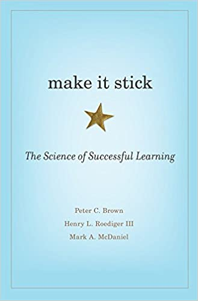

Linguistics Handbook Introduction¶
What's in this handbook¶
The handbook contains the lecture notes to accompany the linguistics lectures. The lecture notes are also on canvas, and this handbook is not designed to replace Canvas materials.
Why have this website in addition to Canvas?¶
I have created these notes using a platform called mkdocs which adds a couple of useful features.
Firstly, the search capabilities are really good. If you press s on your computer a search bar will appear. Type anything into it, e.g. preposition or lemma and it will quickly find the location where these topics are covered. This should be useful for revision.
Secondly, it contains a useful feature called a permalink. If you hover next to a heading, you will see a RETURN character (¶). Click on this, and the heading will move to the top of the screen. You will notice that the "url" (i.e. the address in the address bar at the top of your browser) has changed. You can copy this address, and paste it into the app you are using to take your notes in (that is, if you are using an app, rather than pen and paper). Whenever, you want to quickly access the notes, just click on the link, and it will take you to the relevant location in the notes.
How can I convert this material into notes which I can edit¶
Just copy the entire page, and paste it into your note taking app. You will see the Table of Contents printed at the top, but besides this quirk, the notes should look the same as they do on this website.
What if I don't find this website useful¶
Just ignore it! It is not a replacement for Canvas, and all key materials are on canvas.
How to learn effectively¶
Nick Riches, October 2020¶
Why testing yourself is the key to learning¶
There is substantial research indicating that we learn best when we continually test our knowledge of a topic (Karpicke et al., 2009; Roediger & Karpicke, 2006). This effect is called the “testing effect”, and a learning strategy which depends on continually testing yourself is called “test-enhanced” learning. Amazingly, there is good evidence that the very act of testing yourself is beneficial, even if you do not successfully recall the relevant information (Kornell et al., 2015; Kornell & Vaughn, 2016; Vaughn et al., 2017). This is pretty extraordinary and suggests that time spent studying at your desk is never wasted, even if you are struggling to recall the material.
The way that you test yourself depends on the material you are learning. For example, if testing new words in a foreign language you could have a card with the word in your first language (e.g. English) on one side, and the word in the target language (e.g. French) on the other side. You can work your way through the pack, read the English word, try to recall the French word, and test your knowledge by turning over the card. You could also do this process in reverse, e.g. look at the French word, and try to translate this into English.
The more active we are in the way we test ourselves, the better we learn and retain the information. Regarding the flashcard example above, the more active form of learning is to read the English word, and try to recall the French word. However, though the alternative process, translating from French to English is less active, it may be beneficial in certain contexts, e.g. for quick revision.
Some forms of learning are much more abstract not amenable to flashcards. An example of this is your understanding of the word class Noun. You could revise this in a variety of ways, e.g.
- Provide a definition, but with a word missing, e.g.
A Noun is word which often refers to a ___ (thing). It is often preceded by a ___ (Determiner)
- Create a multiple choice question, e.g. In the following sentence, which of the following properties does not describe a Noun
- It takes the suffix -ing ✔
- It takes the suffix -s (in the regular form)
- It is often prceded by a detrminer
- Create an open-ended “list” question, e.g. “List three properties of a Noun” (Possible answers: it tends to refer to a thing, it inflects for plural, e.g. horses, it comes after a determiner, e.g. the horse, it “agrees” with a verb, e.g. the horse runs, the horses run_ etc.)
- Create a completely open-ended question, e.g. “What is a definition of a noun”?
Which of these you think promotes more active learning? Evidence suggests that the more open-ended questions lead to better learning because they involve active recall of the material rather than recognition of the right answer (Kang et al., 2007). This doesn’t mean that multiple-choice questions are bad for study – they can be very beneficial. For example, there are clear right or wrong answers, unlike open-ended questions, and this can help you decide whether you need to revise a particular topic. They are also less time-consuming than open-ended questions. A good revision strategy would probably contain a mix of different types of revision prompts, e.g. flashcards, multiple-choice questions, open-ended list questions, and completely open-ended questions.
Why note-taking is a key skill¶
Words are concrete and easy to test using flashcard systems. For other kinds of knowledge, e.g. abstract theories, flashcards are too crude and simplistic, so you’ll need to find other ways to test yourself. For example, you could write the key claims of the theory on a piece of paper, number these, and using the numbers as prompts try to recall each claim one by one. This kind of works, but it is clear that the more abstract and complex a knowledge domain becomes, the more difficult it is to think of ways to test yourself.
While you are thinking about clever procedures to test yourself on everything you need to know, just start taking some notes. Take a blank sheet of paper, or open up a note-taking app, and try to recall everything you need to know in note form. By taking notes you are having to actively recall and process the information you have learnt. For example, because you are incapable of rapidly writing down everything the lecturer says (unless you are a word-record typist or short-hand expert), you are having to identify the most important points when notetaking. Also, because human memory for linguistic form is generally weaker than our memory for linguistic meaning, you will have to write down the main points of the lecture in your own words, and in this way you are having to actively process the information.
An additional benefit of note-taking is that you can easily show the structure of the material you are learning using headings and subheadings. All of the material you learn will have some kind of structure, e.g. a theory might consist of three key arguments, and the ICF clinical framework consists of four areas of functioning. Lectures themselves will be organised into discrete sections. Moreover, there is evidence to suggest that information is more adequately processed and retained when it is explicitly integrated into a larger structure. For example the regular use of headings and subheadings in written passages helps the reader to read more quickly and accurately, and recall more information (Hyönä & Lorch, 2004; Lorch & Lorch, 1996; Sanchez et al., 2001).
However, while the information you are given fits into an overarching structure, the technology which is used to deliver lectures is not great for showing structure. Powerpoint does not show structure very well, as it invites the user to create a continuous chain of slides. Sometimes lecturers add “Table of Contents” slides, but this is not that widely practised. By making notes you can actually impose structure on the material you are learning, using headings and subheadings, and this will help you to learn that material.
The Cornell note-taking system¶
A good tried and tested note-taking system is called “Cornell Notes”, which was devised by Prof. Walter Pauk of Cornell University in the 1950s. If you do an internet search you will find loads of materials on this approach. Here is one link to start you off.
Why writing notes on slides may not be helpful¶
Lecturers often supply their students with handouts containing the slides. Many students write on these handouts, and believe that this is an appropriate way to learn. But what is the evidence that this is a good learning approach? Existing studies investigating the impact of slide-based handouts have found that students learn better without them (Kim, 2018; Worthington & Levasseur, 2015).
Why might this be the case? Firstly, if the slides contain a substantial amount of text, you are less likely to convert what you have learnt into your own words. Your notes will become shorter. They will become comments on the slides, rather than a full paraphrase of what you have just heard. Consequently, you will be learning in a more passive manner. Secondly, as mentioned above, it is quite difficult to signpost structure within slides. By contrast, if you make notes on a blank piece of paper it is easier to show structure by writing your own subheadings.
So, I just need to make good notes?¶
Yes, good note-taking is the place to start, but you also need to explore other ways to test yourself. As mentioned, flashcards may be very useful. For example, for anatomy, you could have a picture of a part of the body on one side, and the label on the other. You can look at the picture, and then attempt to recall the label. If you are correct, put it in the correct pile, and if you are incorrect, or cannot recall it, put it in the incorrect pile. There is quite interesting evidence to suggest that if you correctly recall something once, you are likely to recall it successfully in the future (Bahrick et al., 1993). Therefore, you can learn very efficiently just by repeatedly testing yourself on the items in the incorrect pile. Also, make sure that, when you test yourself, you do it at fairly widely-spaced intervals. This principle is known as “distributed learning” or the “spacing effect”, and there is a lot of evidence that it is beneficial for learning in an academic setting (Dempster, 1988).
Naturally, flashcards are only amenable to certain kinds of topics. For more abstract topics (e.g. Linguistics, Psychology), and you will need to find other ways to test yourself, e.g. by creating your own questions / prompts.
What to do with all this technology?¶
There is a whole host of technology out there for you to explore when it comes to taking notes, or creating flashcards. Below I have described a few apps that I am aware of, but there must be many more out there that I’ve missed;
Note-taking¶
OneNote – this has the advantage that it integrates well with other Microsoft products, e.g. emailing, calendar, and Teams
Notion (https://www.notion.so) – possibly the most widely used non-Microsoft note-taking app. It’s also great as a general organisational app. Its basic plan is free.
Roam Research (https://roamresearch.com) – High-concept, and slightly geeky app, frequently touted as “the next big thing”. It’s online only, and expensive, but students can get free plans.
Evernote (https://evernote.com) – Simple app, which works both online and locally
Apple Notes - If you are an Apple afficionado.
Flashcards¶
Quizlet (https://quizlet.com/en-gb) – online flashcard app.
Anki (https://apps.ankiweb.net) – open source cross-platform flashcard app. It has a bit of a steep learning curve.
All-in-one technologies¶
These are technologies which incorporate note-taking and flashcards in a single app. The idea is that you can use them to take notes, and quickly generate flashcards to test yourself.
Remnote (https://www.remnote.com) – Very user-friendly, online but also with a local app. It is explicitly designed for students. However, make sure you regularly back up your data to your local computer and don’t leave it sitting in the cloud (Remnote provides an easy way to do this).
Obsidian - (https://obsidian.md) - Very popular note-taking app with revision features incorporated via plugins.
Logseq (https://logseq.com) – Wonderful open-source notetaking and general organisational app. However, the learning curve is steeper than remnote. A big advantage is that you have complete ownership of your data.
Roam Research – As mentioned above. Roam also has good tools for creating question banks.
Further reading¶
“Make it stick: the science of succesful learning” (Brown, Roediger III, McDaniel) is a popular science book written by leading experts in the field which covers many of the above ideas, e.g. test-enhanced learning, distributed practice. The website which accompanies the book (https://www.retrievalpractice.org/make-it-stick) also contains lots of really cool infographics to demonstrate the main ideas. Check it out!

General bibliography¶
Bahrick, H., Bahrick, L., Bahrick, A., & Bahrick, P. (1993). Maintenance of foreign language vocabulary and the spacing effect. Psychological Science, 4, 316–321.
Dempster, F. (1988). Informing classroom practice: What we know about several task characteristics and their effects on learning. Contemporary Educational Psychology, 13, 254–264.
Hyönä, J., & Lorch, R. F. (2004). Effects of topic headings on text processing: Evidence from adult readers’ eye fixation patterns. Learning and Instruction, 14(2), 131–152. https://doi.org/10.1016/j.learninstruc.2004.01.001
Kang, S. H. K., McDermott, K. B., & III, H. L. R. (2007). Test format and corrective feedback modify the effect of testing on long-term retention. European Journal of Cognitive Psychology, 19(4–5), 528–558. https://doi.org/10.1080/09541440601056620
Karpicke, J. D., Butler, A. C., & Roediger III, H. L. (2009). Metacognitive strategies in student learning: Do students practise retrieval when they study on their own? Memory, 17(4), 471–479. https://doi.org/10.1080/09658210802647009
Kim, H. (2018). Impact of slide-based lectures on undergraduate students’ learning: Mixed effects of accessibility to slides, differences in note-taking, and memory term. Computers & Education, 123, 13–25. https://doi.org/10.1016/j.compedu.2018.04.004
Kornell, N., Klein, P. J., & Rawson, K. A. (2015). Retrieval attempts enhance learning, but retrieval success (versus failure) does not matter. Journal of Experimental Psychology: Learning, Memory, and Cognition, 41(1), 283–294. https://doi.org/10.1037/a0037850
Kornell, N., & Vaughn, K. E. (2016). How Retrieval Attempts Affect Learning. In Psychology of Learning and Motivation (Vol. 65, pp. 183–215). Elsevier. https://doi.org/10.1016/bs.plm.2016.03.003
Lorch, Jr., Robert F., & Lorch, E. P. (1996). Effects of Headings on Text Recall and Summarization. Contemporary Educational Psychology, 21(3), 261–278. https://doi.org/10.1006/ceps.1996.0022
Roediger, H. L., & Karpicke, J. D. (2006). Test-Enhanced Learning. Taking Memory Tests Improves Long-Term Retention. 249–255. https://doi.org/doi:10.1111/j.1467-9280.2006.01693.x
Sanchez, R. P., Lorch, E. P., & Lorch, R. F. (2001). Effects of Headings on Text Processing Strategies. Contemporary Educational Psychology, 26(3), 418–428. https://doi.org/10.1006/ceps.2000.1056
Vaughn, K. E., Hausman, H., & Kornell, N. (2017). Retrieval attempts enhance learning regardless of time spent trying to retrieve. Memory, 25(3), 298–316. https://doi.org/10.1080/09658211.2016.1170152
Worthington, D. L., & Levasseur, D. G. (2015). To provide or not to provide course PowerPoint slides? The impact of instructor-provided slides upon student attendance and performance. Computers & Education, 85, 14–22. https://doi.org/10.1016/j.compedu.2015.02.002
Lecture notes ↵
01 - Introduction¶
Introduction¶
Why SLTS need to know about linguistics¶
- Is a child who says Him go there language impaired?
- CELF Formulating Sentences - what kind of linguistic skills are being measured?

- Diagnose language impairments
- Identify targets for therapy
- Devise new therapies
What is linguistics?¶
The study of language, consisting of 4 subdomains
- syntax: language structure
- semantics: linguistic meaning
- phonology: the sound system of language
- pragmatics: language in context
What is syntax?¶
- Syntax encompasses word order, and how different languages form different structures
- Example of different word orders in different languages:
- English Subject-Verb-Object, e.g. Tom watches TV
- Japanese SOV, e.g. Tom-san-wa Terebi-o Mimashita
- Examples of the way different languages form questions:
- English questions involve movement, e.g. What is he doing?_
- Japanese places 'ka' at the end
- Spanish merely uses intonation
What is semantics?¶
- The study of word and sentence meaning
- BIG QUESTIONS: How are word meanings represented / expressed? How are word meanings combined to form sentence meanings?
What is pragmatics¶
The study of language in context
A: Do you want to see Mission Impossible V? B: I don't like action movies.
Interpretation 'no thanks' is only derivable if sentence is produced in the appropriate context
What is phonology?¶
- Ask Ghada and Jalal!!
Crossing over¶
While it is tempting to think in neat subfields, many phenomena cross over
e.g. The meaning of verbs (semantics) determines the number of participants in a sentence, which in turn determines the structure (syntax).
- John [1] gave Mary [2] a book [3]
Because of these cross-over phenomena, linguists often talk about the 'interfaces' between the different subdomains, e.g. the syntax-semantic interface.
Subfields of linguistics¶
Theoretical linguistics: investigates the nature of linguistic knowledge. IMPORTANT QUESTIONS: Are we born with knowledge of language? How do we explain similarities and differences across languages?
Psycholinguistics: investigates how we comprehend and produce language. IMPORTANT QUESTIONS: Is the human mind similar to desktop computer? Does the language we speak affect the way we think?
Sociolinguistics: investigates how and why language varies across different social classes and groupings. E.g. William Labov's famous (1963) study of Martha's Vinyard. He studies centralisation of diphthongs (multi-sound vowels). He pioneered methods to elicit relevant words without using word lists. He found an association between self-identification as a native and use of centralisation. Centralisation increased in response to an influx of non-natives. This shows that the language we use "indexes" our social identity.
Discourse studies: How we use language to persuade / exert power relationships.
Approaches to language structure¶
Prescriptive grammars - how we SHOULD speak¶
Prescriptive judgements regarding language usage are periodically proposed by influential individuals. Key targets of prescriptive judgements are the double negative and use of innit as a tage question. Linguists would not regard either of these forms as "bad" English. The key thing is that they are (a) shared among a speech community (b) adequately convey a message, i.e. do not lead to ambiguity and misunderstanding.
(1) Double negative: I haven't got no money / I can't get no satisfaction
Acceptable in certain dialects (e.g. London English) and languages (e.g. Spanish). It does not cause confusion as many prescriptivists claim.
(2) Use of innit as a tag question
- It was a great meal, wasn't it / innit?
- You're Jack's nephew, aren't you / innit?
- They've been to Greece, haven't they / innit?
This simplifies tag questions, but why is that a bad thing? Many languages create tag questions using single morphemes, e.g. Bengali kanna.
(3) African-American Vernacular English:
- He be working Tuesdays (he is usually working on a Tuesday)
- He been got a job (he got a job a long time ago)
It grammaticalises concepts which are not grammaticalised in Standard English. Therefore it is RICHER (with regard to certain grammatical subsystems).
So how do prescriptive grammars arise? They reflect the dominant dialect in the country, which in turn is a consequence of which regions hold the most political and economic power. As Weinreich said 'A language is a dialect with an army and a navy'
Descriptive grammars - how we ACTUALLY speak¶
Geordie English: No plural suffix for nouns denoting a time period, e.g. I've been here three year.
Scottish English: Use of amn't I? as a tag question, e.g. I'm next in line, amn't I?
Mental grammars - the underlying system¶
Which of these sentences is correct?
- Me and Jack went to the shops
- I and Jack went to the shops
- Jack and me went to the shops
- Jack and I went to the shops
Now which is the way you actually say the sentence?
Note that there is a conflict between prescriptive and mental grammars. Individuals who allow prescriptive grammars to override mental grammars are guilty of 'hypercorrection'
Hypercorrection¶
This is a phenomena whereby we override our mental grammar, and instead adopt a prescriptive grammar. Our natural tendency is to say Me and Jack went to the shops. This is our mental grammar. However, in certain formal contexts, we may say Jack and I went to the shops, which is often prescribed at school.
Hypercorrection is interesting because it shows that prescriptive grammar has a lot of power over us.
A communicative view of language¶
Definition¶
(1) Language is primarily a form a communication and all linguistic 'rules' subserve this goal
(2) Linguistic 'rules' are established by speech communities
(3) A sentence is 'well-formed' if it reliably expresses the speaker's thoughts using forms which are 'conventionalised', i.e. shared by the speaker's speech community.
Relationship with SLT practice¶
When assessing children we should evaluate their language according to the norms of their speech community
For example, deviations from the target when scoring sentence repetition which are consistent with the speaker's dialect are not scored as an error.
"The Influence of Linguistic Bias Upon Speech-Language Pathologists’ Attitudes Toward Clinical Scenarios Involving Nonstandard Dialects of English", Easton and Verdon, 2020
- Therapists were given dialect-related clinical scenarios, and needed to make clinical judgements
- Length of experience was correlated with more careful clinical judgements
- Positive attitudes to dialect difference were correlated with more careful clinical judgements.
5-minute exercise¶
What is the grammatical word class (e.g. noun, verb, adjective etc.) of the italicised words in the following sentences:
- The raging river tore through the valley
- That film really sucks
02 - Word classes¶
Definition¶
Working definition is 'minimal standalone symbolic unit'
(1) Symbolic = arbitrary relationship between form and function (as described by the linguistic Charles Sanders Pierce 1839 - 194)
(2) Standalone = make sense in isolation, e.g.
- A: What was he doing? B: Working
- B: How would you describe the experience? B: Unbelievable
- Shark!!!!!!!!
- Swim!!!!!!!!!
(3) Minimal = cannot be divided into smaller standalone units
- Inactive -> One sip of coffee and Charles changes from in- to hyper-active*.
- Underconfident -> ?After eight pints, Angela changes from under- to over-confident.
- Walk out -> She walked through the door and out of my life.
- Blackbird (species) -> She saw a black and a white bird* in the tree
This definition is not perfect, e.g. some items classified as words cannot stand alone, e.g. the dog, and some words are not purely symbolic, e.g. buzz, whisper.
Word classes¶
Words belong to word classes / syntactic categories
The word class determines how we put words together to make sentences
Semantic definitions - why the don't work very well¶
Typical examples:
A verb is a DOING word An adjective is a DESCRIBING word
But are the following adjectives or verbs?
- The raging river tore through the valley
- That film really sucks
These examples demonstrate that semantic/functional definitions of words fall short
3 ways to define word classes¶
(a) Semantics / meaning-based test, e.g. a verb is a 'doing' word.
(b) Morphological test, e.g. we can make a verb progressive by adding -ing
(c) Positional test, e.g. verbs come after subjects and before objects, e.g. she ate the fish, she likes cheese.
So which test?¶
The positional test is the most reliable, e.g.
- The raging river tore through the valley: raging comes before a noun. It is an adjective
- That film really sucks: comes after the subject film. It is a verb.
Let's meet the word classes!¶
Categorization of word classes¶
- Content versus function words
- Content words = Nouns, Verbs, Adjectives, Adverbs. (in Speech and Language Therapy, these are sometimes called 'information-carrying words')
- Function words = Determiners, Prepositions
- Open versus closed class. Open class words permit new members, while closed class words don't. NB all content words are open, and all function words are closed.
- Open = Nouns, Verbs, Adjectives, Adverbs
- Closed = Determiners, Prepositions.
- What the words do in the sentence?
- Referring words = Nouns, Pronouns
- Modifying words = Adjectives and Adverbs
- Where do they appear in the sentence?
- The verb complex tends to contain auxiliary verbs and adverbs in addition to the verb itself
- The Noun Phrase tends to contain determiners and adjectives in addition to the noun itself
- Prepositions are used before the Noun Phrase.
- Super- and sub-types
- Types of modifying words: adjectives and adverbs
- Types of referring words (nominals): Nouns and Pronouns
Word classes and language impairment¶
Children with language impairments
- Tend to miss out function words
- Have difficulties understanding prepositions (when used to express location), e.g. on, in
- Have reduced verb diversity
- Sometimes omit arguments of the verb, e.g. 'She put the books'
5 minutes exercise¶
What's unusual about the following sentence: "That film was absobloodylutely brilliant!"?
A student says 'I am going to a lection'. What does 'lection' mean, and how has this error arisen?
03 - Lexical Representations¶
Have a look at these errors. How/why have they occured?
- They misunderestimated me
- They can refudiate what this group is saying
- I'm on my way to the lection
- I don't expose anyone will eat that
These errors are known as 'blends'. Two words are activated, and combined into one, e.g. expect + suppose -> expose / misunderstand + underestimate -> misunderestimate. Note that when this happens there is often a phonological 'pivot' (my terminology) in the middle of word, i.e. material shared across both words. For exampel, the p in expect / suppose
Characteristics: (1) Multiple Semantic Activation: overlapping meanings (2) Phonological processes in selection: similar word-internal phonology.
Process by which blends are formed combines opportunistic activation / assembly with rigorous monitoring
What does it tell us about words? They are stored in semantic and networks (activation of multiple words with overlapping meanings). There is activation across domains: semantic activation of multiple competitors, and phonological processes involved in blending (the use of a 'pivot'). The system biases speed over accuracy, but recovers from error due to a monitoring system.
Meaning-related sense-relationships¶
Hyponymy¶
'Hypo' = under, 'nym' = word
Plant > Tree > Sycamore / Plant > Flower > Daisy / Furniture > Chair > Stool
A subset relationship. As you go upwards, extension (potential referents) expands, intension (list of definitional properties) narrows.
Tree is a hyponym / subordinate of Plant
Plant is a hyperonym / superordinate of Tree
Mid-level categories are (a) more rapidly named, (b) more easily visualised, (c) acquired earlier
Words which exist at the same level are called co-hyponyms or coordinates, e.g. daisy, begonia, Tulip / flower, bush, tree / chair, sofa, wardrobe.
Synonmy¶
'Syn' = together, 'nym' = name/word
Words with identical meanings.
Very few genuine synonyms. When words are identical in denotation (event or thing they refer to), they differ in connotation (set of associations they trigger), e.g. chap / bloke / geezer (who would you buy a used car from?) , fiesta / knees up / bash / soirée (which would you prefer to go to?)
There are very few genuine synonyms, i.e. where denotation and connotation are teh same. Some examples are words differing across dialects or varieties of a language, e.g. tap / fawcett, pavement / sidewalk, and some grammatical words, e.g. however / nonetheless
Antonmy¶
'Anto' = opposite, 'nym' = name/word
Words with opposite meanings. Can be gradable (e.g. slightly hot, very cold) or non-gradable (e.g. *very dead)
Sometimes there is no obvious opposite, e.g. the opposite of virgin. There is a 'lexical gap'
Homonymy¶
'Homo' = same, 'nym' = name/word.
Same form, but no obvious meaning relationship. Words have similar forms due to 'historical accident'.
May have same root (in which case there is a tenuous meaning relationship), e.g. a table of numbers, versus the kitchen table
Or may have a different root, e.g. bay tree [LATIN baca], the ship entered the bay [OLD FRENCH baie], the dogs bayed [OLD FRENCH abai]. The fact that these words, with different an unrelated meanings, have the same pronunciation is a historical accident.
Polysemy¶
'Poly' = multiple, 'sem' = meaning.
Same form, and different but related meanings. The meaning relationship is mentally represented
Prepositions are notoriously polysemous, e.g. over = straight movement in contact with a plane, e.g. he ran over the field, or over = two dimensional movement across a bounded plane, e.g. the balloon floated over the city (or possibly there is no movement at all), or over = random movement covering a plane_, e.g. he poured ketchup over the chips_.
Other polysemous words;
- He went to bed, a river-bed, flower bed, the steak was served on a bed of lettuce
- The cup was full, the room was full, she has a full schedule, she leads a full life.
Are meaning relationships systematic or random? According to Charles Fillmore (e.g. Fillmore & Atkins, 2000), there is a central sense, with all meanings radiating from this central sense, e.g. all meanings of over share the idea that the 'figure' (smaller object) is, at some stage, above the 'ground' (larger object). All meanings of bed involve a flat surface made of a relatively soft material. When teaching a polysemous word, it may be best to start with the central meaning (or 'sense') of the word, and later teach the more peripheral meanings (e.g. Tyler & Evans, 2004)
Homonyms versus Polysemes¶
Both describe words with same form, but different meanings. The only difference is whether the meaning relationship is mentally represented. Moreover, according to Fillmore's approach meaning relationships among polysemous words are structure / systematic. The only way to test this is via personal intuition.
Lexical gaps¶
A language lacks a word where there should be one. Easily demonstrated with antonyms
- Opposite of bald?
- Opposite of virgin?
Many English kinship terms are vague, e.g. English cousin can be used for a variety of different relations, while Sudanese has different words for every type of cousin.
Loan words, e.g. kitsch & schadenfreude, are used to fill lexical gaps. A recent load word is hygge.
Form-related relationships¶
Homophony¶
Same spoken form, different written forms (with different meanings)
e.g. might / mite, leak / leek
Homography¶
Same written form, different spoken forms (with different meanings)
e.g. bow, minute
Exploring semantic networks¶
- Word association norms
A says a word, and B says the first word that comes into their heads
Coordinates are the most frequent category, e.g. if the prime is cat, the participant says dog. Next are collocations (words which tend to co-occur, e.g. fish and chips, cats and dogs). Then come superordinates, e.g. cat primes pet, and finally subordinates (cat primes Siamese).
Word association tasks conducted with children with Developmental Language Impairments find tentative evidence for reduced semantic networks, e.g. large number of responses which are very odd, e.g. Spoon -> Disney, or based on phonological similarity, e.g. cow -> how (Sheng & McGregor, 2010)
- Semantic fluency tasks
A asks B to say as many words as possible from a single category, e.g. animals, things you take on holidays. When asked to list animals, a typical response might be
Dog, cat, rabbit -- lion, tiger -- fish, whale, dolphin
Responses tend to be grouped into clusters, e.g. the above response contains a DOMESTIC ANIMAL cluster, then a WILD ANIMAL cluster, then a SEA MAMMAL cluster.
- Poorer semantic fluency in developmental language disorders and autism (Kail & Leonard, 1986; Bishop & Norbury, 2005). For example, they produce fewer words and clusters
-
Some have suggested that semantic fluency tasks can be used to predict onset of Alzheimmers: few clusters, cluster members and switches between clusters (Gomez & White, 2006)
-
Lexical priming task
e.g. does hearing word X spead up recognition / recall of word Y?
Exploring word production using lexcial speech errors¶
Types of error:
- Blend, e.g. lection
- Phonological substitution (malapropism), e.g. The Chinese emperor had many concubines -> porcupines, Brexit means Brexit -> breakfast.
- Semantic substitution, e.g. Give me the hammer -> screwdriver.
- Tip of the tongue effects = we know the meaning of the word we want, but phonological access is partial
Available evidence suggests 2-stage model: (1) Activation of meaning, (2) Activation of form. The meaning level is called the 'lemma' level. We will revisit this concept in week 10.
5-minute Exercise¶
How many 'units of meaning' in the following words:
- Dogs
- Laughed
- Working
- Believe
- Unbelievable
- Sang
Bibliography¶
Kail, R., & Leonard, L. (1986). Word-finding abilities in language-impaired children.
Bishop, D. V. M., & Norbury, C. F. (2005). Executive functions in children with communication impairments, in relation to autistic symptomatology: I Generativity. Autism, 9(1), 7–27.
Fillmore, C J; Atkins, B T S (2000). "Describing polysemy: The case of "crawl"". In Ravin, Y; Leacock, C. Polysemy: Theoretical and computational approaches. Oxford: Oxford University Press. pp. 91–110., p.100.
Gomez, R. G., & White, D. A. (2006). Using verbal fluency to detect very mild dementia of the Alzheimer type. Archives of Clinical Neuropsychology, 21(8), 771–775.
Sheng, L., & McGregor, K. K. (2010). Lexical–semantic organization in children with specific language impairment. Journal of Speech, Language, and Hearing Research, 53(1), 146–159.
Tyler, A., & Evans, V. (2004). Applying Cognitive Linguistics to Pedagogical Grammar: The Case of Over. Cognitive Linguistics, Second Language Acquisition, and Foreign Language Teaching, 257.
04 - Words versus morphemes¶
Relevance of words and morphemes¶
Words and morphemes are the building blocks of sentences
In order to analyse sentence structure we need to know about words and morphemes
Language-impaired individuals, in particular children, tend to have morphological difficulties
Definitions¶
Both words and morphemes are 'symbolic', meaning that there is an arbitrary relationship between form and function.
MORPHEME = smallest unit of meaning¶
How many 'units of meaning' in the following words:
- Dogs
- Laughed
- Working
- Believe
- Unbelievable
- Sang
WORD = smallest standalone unit of meaning (or minimal standalone symbolic unit)¶
Words can stand alone, e.g.
- A: What was he doing? B: Working
- B: How would you describe the experience? B: Unbelievable
- Shark!!!!!!!!
- Run!!!!!!!!!
Categorising morphemes¶
Morphemes can be free or bound. If a morpheme is free it can also be classified as a word (because it can 'stand alone'). In the following sentence, we have examples of both free and bound closed-class morphemes
- Jack is (really) try-ing to run fast-er
Bound morphemes can be prefixes or suffixes (which are both kinds of affixes). Another type of bound morpheme is the infix, which comes in the middle of the word. English rarely uses infixes, and when they are used they sound "marked" (odd), e.g. fan-bloody-tastic). Other languages use infixes productively, e.g. Arabic
Morphemes are divided into two categories, inflectional and derivational. While inflectional morphemes make minor modifications to a word's meaning, derivational morphemes are used to derive a new word, either by substantially changing meaning or altering word class.
Words containing multiple morphemes are described as morphologically complex.
The difference between inflectional and derivational morphemes¶
(1) Identify the prefixes / suffixes in these words. Which of these morphemes is inflectional / deriviational?
- Dogs
- Laughed
- Unbelievable
- Reconsider
- Working
- Smaller
- Outmaneouvre
- Careless
- Intensify
- Manageress
- Slept
(2) Can you correct the following sentences? What is wrong with them?
- He see the cat eats the food.
- My house is big than yours.
(3) How does the pronunciation of the past tense vary across the following sentences?
- He dropped the book
- He turned the corner
- She skidded on the mat
(4) What's the problem with the following sentences?
- He is uneducated and untolerant
- While Jack is a sporty person, Anna is more booky
- While Mary embraced motherhood, she wasn't so keen on wifehood
- Jane quickly realised the falseness of the information.
Now complete the following statements about the two types of morpheme, citing the examples above (answers provided).
- While INFLECTIONAL morphemes are involved in syntactic processes, DERIVATIONAL morphemes are not.
- INFLECTIONAL morphemes participate in phonological processes to a greater extent than DERIVATIONAL morphemes
- While INFLECTIONAL morphemes are very productive (we can add them to many words), DERIVATIONAL morphemes are less productive.
- While DERIVATIONAL morphemes can come at the beginning and ends of words (prefixes and suffixes), INFLECTIONAL morphemes can only come at the end (suffix)
Other differences: (1) Derivational morphemes are longer (2) Derivational morphemes have more specific meanings, e.g. out in outmaneouvre means "to do something better than a competitor" (3) Derivational morphemes are more language-specific, e.g. out- prefix is not found in Spanish, and -ito/-illo diminutive suffixes are not used productively in English.
Word-building processes¶
There are three ways to form morphologically complex words using morphological processes
- Inflection (adding inflectional morphemes), e.g. laugh-ed
- Derivation (adding derivational morphemes), e.g. un-do
- Compounding (taking two words and "squishing" them together), e.g. fire man, book seller
Generally the last two are described as word-building processes as they can be used to coin new words, e.g. skypeable, or red jacket man/woman (a mysterious handsome stranger you see on the Metro every morning)
When we build morphologically-complex words, we tend follow a particular order
- We start out with the root
- We add deriviational affixes
- We add an inflectional affix
This gives the impression that we build up the words in a series of steps.
Morphemes and language impairment¶
Individuals with language impairment struggle with inflectional morphemes. In particular, children with Developmental Language Disorder (DLD) often miss out tense morphemes, e.g. regular past tense.
Many studies quantify children's language abilities using the Mean Length of Utterance in Morphemes.
Language-impaired individuals tend to have difficulties using derivational morphemes. It is worthwhile teaching these morphemes in clinic as they can be used to build words.
5 minute exercise¶
Look at these examples. What does the suffix 'mouth' mean? How do you pronounce it in each word?
- Portsmouth
- Plymouth
- Tynemouth
- Grangemouth
- Cockermouth
05 - Morphological representation and processing¶
Look at these examples. What does the suffix 'mouth' mean? How do you pronounce it in each word?
- Portsmouth
- Plymouth
- Tynemouth
- Grangemouth
- Cockermouth
Dual systems models of morphology¶
These propose two systems involved in morphological storage / processing:
- A computational system
Words are generated by taking a root and adding an affix (combinatoric symbolic rule)
- A lexical system
Morphologically complex words are stored / processed as wholes in the lexicon
Evidence for a computational system¶
-
We can use morphemes productively
-
He merengued his way onto the dance floor
- She was so angry that she crutched her boyfriend
- There are two wugs
- Look! The dog is meeking
- The dog was unmeekable
- Morphological movement, stranding and substitution errors indicate separate storage of inflectional / derivational morphemes
- She wash upped the dishes.
- I'd forgot abouten that
- We have a lot of churches in our minister
- She always packs a keep
- He gave me some good device
-
Evidence that we process sounds which are potentially morphemes as morphemes (morpho-phonological parsing - Post et al. 2008). For example reaction times indicate that we parse pseudo-inflections, e.g. mild (potentially past tense of the verb to mile) as actual inflections.
-
Words with regular inflectional affixes tend to be phonotactically irregular (e.g. irregular lost rhymes with frost, but regular turned does not rhyme with any other monomorphemic word). This suggests they are not stored.
Evidence of the whole-word storage of morphologically-complex words¶
- Some complex forms contain non-word roots, indicating that they haven't been built up compositionally, e.g.
- Unremittingly
- It's inevitable
- The food supplies were depleted
- Some morphemes have multiple meanings, e.g. -er = AGENT, e.g. gardener, or INSTRUMENT, e.g. paint stripper. If words are built up compositionally, how do we know which meaning of -er to select?
- Psycholinguistic evidence indicates that some morphologically-complex forms are stored as wholes, e.g. Loscewicz (1995) found that inflections in high-frequency inflected forms were significantly shorter than in low-frequency inflected forms -> high-frequency forms were stored as a whole. Alegre and Gordon (1999) found a relationship between whole-word frequency and performance on a nonword discrimination task when whole-word frequency exceeded 1 per 7 million.
A hybrid view¶
There is strong evidence for both computational and whole word accounts. Novel inflected forms, e.g. meeked, must be generated by adding the morpheme. Words with non-word roots, e.g. unremittingly clearly cannot be generated compositionally. So we have two possible** routes to creating morphologically-complex words.
- High frequency morphologically complex forms are stored in the lexicon
- Lower frequency forms are generated by computational processes
This reflects a trade-off between speed of processing, and expressivity. Whole-word storage of morphologically complex forms -> rapid processing. Separate storage of morphemes allows coining of novel morphologically complex forms, e.g. meeked**.
Pronunciation of mouth in Plymouth versus Cockermouth may reflect two systems (high frequency form, stored as a whole, involves schwa sounds (neutral vowel)
The binary view may be too simple. Aitchison (2002) suggests a variety of different levels of storage. For example, the semantic transparency of morphemes (how interpretable they are) exhibits gradient properties.
Fogglemouth = This is an imaginary town lying at the mouth of the river 'Foggle'. Suffix -mouth is fully transparent. It is applied using a productive rule > Grangemouth = A real town, but for those outside the Cumbria, this is likely to be a low-frequency word. It may be stored as a whole. Suffix -mouth is less transparent than the -mouth in Fogglemouth > Plymouth = High frquency word stored as unanalysed whole. Suffix mouth is less transparent than in Grangemouth.
chickenless (FULLY PRODUCTIVE / TRANSPARENT) > careless (PARTIALLY PRODUCTIVE / TRANSPARENT) > gormless, ruthless (NOT PRODUCTIVE / TRANSPARENT)
For chickenless, both morphemes are semantically transparen. The word looks derived. For careless, the morphemes are transparent, but we are likely to store and process the word as a whole. Finally, in gormless and ruthless the roots are not semantically transparent.
Morphology in language impairments - Ullman and Pinker's Dual Route model¶
Ullman and Pinker explain language difficulties in terms of the computational and lexical systems, and also give it a neuropsychological grounding. The computational system is governed by procedural memory (involved in the acquisition of unconscious, implicit routines), while the lexical system resides in declarative memory. In particular, they focus on verbs
- Irregular forms are stored as wholes in the lexicon
- Regular forms are generated via the computational system
(NB Pinker and Ullman accept that high-frequency inflected forms may be stored in the lexicon)
The two systems compete with each other under time pressure. If an irregular form is found, the computational process is blocked. If the irregular form is not found, the computational process takes over.
Evidence:
- Frequency effects are only found in the irregular system only
- Children's overregularisation errors, e.g. she swammed are determined by the density of the irregular neighbourhood which the irregular root belongs to.
- Adult generation of inflected form is affected by input frequency only in the irregular system.
- Difficulties with regular forms are linked to impaired procedural memory
- Children with Developmental Language Disorder
- Adults with Parkinsons
- Adults with Broca's-type aphasia
- Difficulties with irregular forms are linked to impaired declarative memory
- Adults with Anomia
- Adults with Wernicke's type aphasia
Criticism of the dual route model¶
(1) Pseudo-regularity (irregular forms exhibit characteristics of regular forms)¶
Irregulars exhibit characteristics of the regular system, e.g. verbs already ending in an alveolar plosive are more likely to be irregular, e.g. meet -> met, let -> let, put -> put, shut -> meet -> met, and nouns already ending in -s are more likely to take irregular plurals, e.g. goose -> geese, mouse -> mice, moose -> moose. This has led some researchers to argue that there are not two completely separate systems for regular and irregular forms, e.g. Joanisse and Seidenberg (1999)
(2) The role of frequency¶
The Dual Route model argues that frequency effects are characteristic of the lexical/declarative system, but not the computational system. Nonetheless, frequency effects also characterise the regular system (e.g. Losiewicz and Alegre & Gordon studies cited above)
5-minute exercise¶
Which one of these sentences did Yoda say in the Star Wars trilogy? Can you explain the reasons behind your choice?
- Have become powerful you. You the dark side I sense in.
- Powerful you have become. The dark side I sense in you.
- Become powerful you have. The dark I sense in you side.
Bibliography¶
Aitchison, J. (2002). Words in the Mind: An Introduction to the Mental Lexicon (3rd Edition). Wiley-Blackwell.
Alegre, M., & Gordon, P. (1999). Frequency effects and the representational status of regular inflections. Journal of Memory and Language, 40, 41–61.
Joanisse, M. F., & Seidenberg, M. S. (1999). Impairments in verb morphology after brain injury: A connectionist model. Proceedings of the National Academy of Sciences of the United States of America, 96(13), 7592.
Losiewicz, B. L. (1992). The effect of frequency on linguistic morphology. University of Texas at Austin.
Pinker, S., & Ullman, M. T. (2002). The past and future of the past tense debate. Trends in Cognitive Sciences, 6(11), 456–463.
Post, B., Marslen-Wilson, W. D., Randall, B., & Tyler, L. K. (2008). The processing of English regular inflections: Phonological cues to morphological structure. Cognition, 109(1), 1–17. https://doi.org/10.1016/j.cognition.2008.06.011
Ullman, M. T., & Pierpont, E. I. (2005). Specific language impairment is not specific to language: the procedural deficit hypothesis. Cortex, 41(3), 399–433.
06 - The semantics of events¶
Tense¶
"Tense" refers to when an action took place in relation to the time of speaking, e.g.
-
I like cheese. PRESENT TENSE: At the moment of speaking, the speaker likes cheese.
-
She ate an apple. PAST TENSE: The eating event occurred BEFORE the moment of speaking.
English has two morphological tenses (i.e. marked by verb endings): the past and the present.
The future is not morphologically marked, but is expressed in a variety of different ways.
- "will" future: I'll help you to carry that shopping.
- "going to" future: I think I'm going to be sick.
- "about to" future: I am about to be sick
- PRESENT TENSE as future: The train leaves at 6.15
- PRESENT PROGRESSIVE as future: We're leaving at 10am.
These forms for expressing the future are generally not described as tenses because
-
They are not morphological forms (i.e. they involve more than verb endings)
-
They express meanings above and beyond the future.
For example....
- "will" is used for OFFERS and PREDICTIONS
- I'll help you with that bag
- I think it will rain tomorrow
- "going to" is used to talk about the FUTURE BASED ON CURRENT EVIDENCE, or PLANS
- I think I'm going to be sick (because I feel nauseous)
- I'm going to apply for a Speech and Language Therapy course
- PRESENT TENSE is used for a TIMETABLED FUTURE
- The train leaves at 6.15
- PRESENT PROGRESSIVE is used for a FUTURE ARRANGEMENT
- I'm studying Speech and Language Therapy next year (I already have a place on a course)
- "be about to" is for the NEAR FUTURE
- The players are warming up. The match is about to begin.
Because future forms in English are not strictly tenses, we are going to refer to the "future tense" in inverted commas.
Next week, we're going to be looking at the syntax/morphology of tense in more detail.
Aspect¶
Inherent temporal properties of events¶
Zoetrope - a victorian parlour toy designed to create a moving image (http://www.youtube.com/watch?v=-hE_fA9M580&t=1m18s)
Which of the following verbs would make a good zoetrope?
- swim
- crash
- laugh
- dive
- pop
- dance
- exist
For a verb to work in zoetrope it needs (a) 'internal structure' (b) no definite end point, e.g. running, walking, swimming.
We can see that certain verbs have particular temporal properties. These properties are referred to as "lexical aspect" (sometimes called "aktionsarten")
### (a) States versus non-states¶
States are abstract, and do not have "internal structure" (e.g. "existing" doesnt' vary in any way across time, while when you are running, different snapshots will show your arms and legs in completely different positions). Non-states have internal structure.
Examples of states are "existing verbs", be, live, exist, "experiencer-theme verbs", e.g. like, love, hate, and mental state verbs, e.g. believe, know, hope.
Tests...
- Because they are abstract they are difficult to define. E.g. you can give a good definition of run, but try to give a definition of exist, or like
- State verbs sound odd in the progressive (-ing form), e.g. ??she is existing, ??she is liking the food, ??I am believing in fairies. This is becuase the progressive places us inside the event, and this is difficult to do when an event does not have a rich internal structure.
- They sound odd as reponses to the question what happened?, e.g. Q. What happened? ???A. She liked the food
(b) Activities versus events¶
Activities do not have a natural end point (they are "atelic"). Events have a natural end point (they are "telic").
Examples of activities are run, walk, wash, work. Examples of events are break, collapse, crash, fall
Because activities do not have a natural endpoint, they sound good when used with time expressions which imply an incomplete activity e.g. I've been walking for an hour (and I may continue to walk for another hour). By contrast events sound odd when used with such time expressions, e.g ${}$ It collapsed for an hour.*
Events sound good with time expressions which imply a complete activity, e.g. The bridge collapsed in five seconds. Activities do not sound good with such time expressions, e.g. ${}$ He walked in five minutes*
(c) Accomplishments versus achievements¶
Achievements are instantaneous events, taking place in a very brief instant, while accomplishments can take place over an extended period of time. The linguistic term to descibe this phenomenon is "durative" (see table below). A durative event is one which is extended in time.
Because Achievements are instantaneous / non-durative, they cannot be stopped in the middle, e.g.
- ? They stopped reaching the summit
- ? The balloon stopped popping
This contrasts with Accomplishments which can be stopped in the middle, eg.
- She stopped jumping over the stairs
- They stopped building the house
In addition, because Accomplishments are extended in time, we can use them with progressive grammatical aspect, while we cannot do this with Acheivements, e.g.
- They are building the house
- ? They are reaching the summit
| Dynamic (Rich internal structure) |
Durative (Occurs during prolonged period) |
Telic (Bounded) |
|
|---|---|---|---|
| State | - | + | - |
| Activity | + | + | - |
| Accomplishment | + | + | + |
| Achievement | - | - | + |
Summary of tests¶
- Definition test: States are relatively hard to define.
- What happened test: Doesn't sound good with States
- Present progressive (-ing form): States and Achievements do not sound good in the progressive
- "for" test: Activities sound good with a "for" expression, but not events.
- "in" test: Events sound good with "in" but not activities
- "Stop" test: Achievements do not sound good with "stop", e.g. she stopped reaching the top of the mountain
Multiple lexical aspects¶
Some verbs seem to have more than one lexical aspect
- I like cheese (STATE)
- She liked my post on facebook (i.e. pressed "like") (ACHIEVEMENT)
- I have a car (STATE)
- She's having a good time (ACTIVITY)
- I love that dress (STATE)
- I'm loving this book (ACTIVITY???)
- Be quiet. I'm thinking (ACTIVITY)
- I think you're really rude (STATE)
So what's going on here? One possibility is that each verb has two different meanings corresponding to different lexical aspects. This is certainly the case for think (thinking as an activity versus think=believe). With other verbs it's possibly to identify a primary meaning, and a secondary meaning which is an extension of the primary meaning, e.g. love = STATE -> loving = ACTIVITY.
Some verbs can `shift' lexical aspect depending on sentence context;
- She's is dancing (ACTIVITY)
- She finally danced the tango (ACHIEVEMENT)
- The light is flashing (ACTIVITY, NB there is an `iterative' interpretation)
- The light flashed (ACHIEVEMENT)
However, it is often possible to identify a `core', most frequently used lexical aspect.
Exercise¶
What is the lexical aspect of the following verbs?
- fly
- sing
- flatten
- paint
- cover
- suck
- flash
Grammatical aspect¶
Grammatical aspect refers to grammatical devices to signal one's perpsective on an event. In English there are two grammatical aspects: PROGRESSIVE and PERFECTIVE. The progressive (-ing form), signals an INTERNAL perspective on the event, while the perfective (-en form) signals an EXTERNAL perspective on the event,
- He is dancing (PROGRESSIVE aspect)
- She is singing (PROGRESSIVE aspect)
We are "inside" the event in the sense that the event continues up till the time of speaking, and will continue after the time of speaking.
- King Kong has fallen (PERFECTIVE aspect)
- I have broken the chair (PERFECTIVE aspect)
We are "outside" the event in the sense that the event is complete.
Other languages have richer systems, e.g Spanish differentiates between the Imperfective and the Progressive.
Tense is not aspect¶
Students often confuse tense and aspect. Don't worry, this is normal, as these concepts are very closely related. Here are two sentences which demostrate the difference:
- By this time next week, I will have eaten all of the tins of baked beans in my cupboard
This sentence uses the "WILL" FUTURE, but perfective aspect to express COMPLETION
- She was sleeping when the earthquake happened
This sentence is in the PAST TENSE but uses progressive aspect to describe an ONGOING event.
Combinations of tense, grammatical and lexical aspect¶
Tense, grammatical and lexical aspect combine in weird and wonderful ways. This is a very complex system and we can only begin to scrape the surface.
(a) Present tense and Activity/Accomplishment/Achievement verbs¶
When present tense is used with Activities, Accomplishments and Achievements, we get a HABITUAL intepretation, e.g.
- She sings every day.
- He works in a call centre
- He smashes things (he's clumsy or aggressive)
(b) Progressive grammatical aspect and achievement verbs¶
This conveys an iterative interpretation (repeated events)
- The light is flashing
- He's flattening boxes
Tense/aspect and SLT practice¶
Children with SLI have difficulties marking tense, e.g.
- He went there -> Him go there
However, this is a difficulty with the morphological expression of tense, rather than a difficulty understanding what tense means.
Young children, when acquiring tense, conflate tense and aspect. They are more likely to mark paste tense on Achievement and Accomplishment verbs, because these tend to describe COMPLETED events. Some studies have argued that by manipulating the lexical aspect of verbs you can help children acquire tense (Van Horne, A. J. O., Fey, M., & Curran, M. (2017). Do the Hard Things First: A Randomized Controlled Trial Testing the Effects of Exemplar Selection on Generalization Following Therapy for Grammatical Morphology. Journal of Speech Language and Hearing Research, 60(9), 2569; Johnson, B. W., & Morris, S. R. (2007). Clinical implications of the effects of lexical aspect and phonology on children’s production of the regular past tense. Child Language Teaching and Therapy, 23(3), 287–306.) In fact, Van Horne et al. found that children with DLD were better at producing the past tense forms when trained on more difficult items!
Some studies have found that language-impaired children have difficulties comprehending and producing grammatical aspect (Fletcher, P., Leonard, L. B., Stokes, S. F., & Wong, A. M. Y. (2005). The expression of aspect in Cantonese-speaking children with Specific Language Impairment. Journal of Speech Language and Hearing Research, 48(3); Leonard, L. B., Deevy, P., Kurtz, R., Krantz Chorev, L., Owen, A., Polite, E., … Finneran, D. (2007). Lexical aspect and the use of verb morphology by children with specific language impairment. Journal of Speech, Language, and Hearing Research, 50(3), 759.)
Homework¶
What is unusual about the following sentence?
"Here be dragons"
07 - The syntax of events¶
Finite and non-finite forms¶
Summary of finite and non-finite forms¶
Finite = verb has tense (present or past)
Non-finite = verb does not have tense
There are three non-finite forms; the perfective form, e.g. I have broken it, the progressive form, e.g. I am eating it, and the infinitive, e.g. I hope to get married some day
NB WORD OF WARNING: The perfective from is often called the past participle. The past participle is terrible name, as we can use it to talk about the future, e.g. By this time tomorrow I will have finished the essay. It really refers to a COMPLETED event (we take an EXTERNAL perspective). Likewise the progressive form is sometimes called the present participle. This is also a terrible name as the present participle does not have to refer to now, e.g. She was laughing. It really refers to an INCOMPLETE / ONGOING EVENT (we take an INTERNAL perspective)
Finite forms tend to have a richer inflectional morphology, i.e. the form of the verb changes depending on the subject. In English the inflectional morphology is relatively sparse, e.g.
| Singular | Plural | |
|---|---|---|
| 1st person (speaker) | I run | We run |
| 2nd person (hearer) | You run | You run |
| 3rd person (neither speaker nor hearer) | She runs | They run |
Spanish has a much richer system
| Singular | Plural | |
|---|---|---|
| 1st person (speaker) | Yo corro | Nosotros corremos |
| 2nd person (hearer) | Tu corres | Vosotros correís |
| 3rd person (neither speaker nor hearer) | El corre | Ellos corren |
The importance of tense marking¶
With a few exceptions, all main verbs in English MUST be tense-marked, e.g.
- *I eating food
- I am eating foot (tensed auxiliary "rescues" the sentence)
The main exception is the imperative (for commands) which employs the infinitive:
- Shut that door!
Grammatical Aspect¶
What is grammatical aspect?¶
Grammatical Aspect is used to signal one's PERSPECTIVE on an event. We can take an EXTERNAL perspective on the event (Perfective aspect), or INTERNAL perspective (Progressive aspect)
Perfective aspect requires "have" as the agreeing auxiliary
- I have done it.
Progressive aspect requires "be" as the agreeing auxiliary
- She is doing it
Combining tense and aspect¶
When combining tense and aspect we
-
Mark aspect on the rightmost verb and insert an appropriate auxiliary verb
-
Repeat last rule if necessary
- Mark tense (plus ”the future”) on the leftmost verb
Aspect expresses the PERSPECTIVE. Tense expresses the VIEWPOINT (past / present / future), e.g.
- She has${PRES.~TENSE}$ eaten${PERF.~ASP}$ the food
Perfective Aspect signals an EXTERNAL PERSPECTIVE on the event (the event is completed). Past tense shows that we adopt a PRESENT VIEWPOINT on the event. This is the "Present Perfect" and it is used when when a completed event has relevance for the present, e.g. I have eaten the food, and therefore I am full
- We 'll be${FUT.~TENSE}$ eating${PROG.~ASPECT}$ dinner when you arrive
Progressive Aspect signals an INTERNAL PERSPECTIVE on the event (it is ongoing). Future tense shows that we adopt a FUTURE VIEWPOINT. This is the "Future Progressive" and it is used to describe an ongoing future event.
Adding Adverbs¶
Adverbs typically come inside the Verb Complex, after the firs auxiliary (if there is one);
- She is always laughing
- She has never been arrested
08 - Syntactic Functions¶
What are functions?¶
Behaviour of phrases in different positions¶
- [ The smelly brown dog $_{NP}$] chased the scrawny grey cat
- The scrawny grey cat chased [ the smelly brown dog $_{NP}$]
- The woman hit the man [ with a French stick $_{PP}$]
- The woman [ with a French stick $_{PP}$] with a French stick left the bakery
We need to explain how different phrases in different positions have different roles within the sentence
The phrases have syntactic functions
Functions are relational they express relationships between phrases. Most functions are defined in relation to the verb.
5 minute exercise¶
Try to learn the following artificial language
- Gugo bikavit lamnok = 'The cat chased the dog'
- Lopo bikavit tunglish = 'The cat ate the food'
- Lopo gugo lamnok = 'The dog likes the food'
What does the following sentence mean?
- Bikavit gugo tunglish
How did you complete the artificial language learning task?
You figured out that particular positions in the sentences had particular FUNCTIONS. e.g. Subject, Verb, Object.
Functions and sentence position¶
Obligatory functions - Subjects and Verbs¶
Almost all sentences of English needs a Subject and a Verb
- [ Syntax ${SUBJECT}$ ] rocks! ${VERB}$
- [ Madonna ${SUBJECT}$ ] sings ${VERB}$
- [ That donkey ${SUBJECT}$ ] kicks! ${VERB}$
The Subject is often the do-er, e.g. Madonna is the person who sings, and the donkey is the thing that kicks. However, in the following sentence
- Breakfast is served
Breakfast is not the do-er. This shows that functions express a relationship which is only loosely linked to meaning. Functions express syntactic relationships, and are more closely related to sentence position than meaning. For example, in English, the Noun Phrase which comes immediately before the verb is always the Subject.
In many languages the formal relationship between subject and verb is expressed via agreement. This means that the form of the verb is linked to the type of subject, e.g.
| Person | Singular | Plural |
|---|---|---|
| 1st (speaker) | I sing | We sing |
| 2nd (addressee) | You sing | You sing |
| 3rd (person outside the conversation) | She sing-s | They sing |
We can see that the English paradigm is very sparse. However, other languages have much richer verb agreement paradigms, e.g. Spanish and Latin.
Functions which are "chosen" by the verb¶
(a) Objects¶
After the verb, we often (but not always) have an Object
- Syntax rocks [ my world! $_{OBJECT}$ ]
- Madonna sings [ catchy tunes $_{OBJECT}$ ]
- That donkey kicks [ people $_{OBJECT}$ ]
These are "chosen" by the verb in the sense that only certain verbs can take objects. For example, after the verbs yawn and run we typically do not have objects, e.g.
- He yawned
- She ran
These are called intransitive verbs.
Some verbs take two objects, in which case we have a direct and an indirect object.
| Direct Object (Od in LARSP) | Indirect Object (Oi in LARSP) | |
|---|---|---|
| Meaning | The thing which changes location / possession, e.g. She gave the ball to Jack | The thing which receives the transferred entity, e.g. She gave the ball to Jack** |
| Animacy | Often inanimate | Often animate |
| Syntax | Does not come after a preposition | Often comes after a preposition |
Note that the Indirect Object is "parasitic" on the Direct Object in the sense that it needs a Direct Object in order to be realised;
- Janet gave [ a book $_{Direct~Object}$]
- Janet gave [ a book ${Direct~Object}$]. [ to Mary ${Indirect~Object}$ ]
- ?? Janet gave [ to Mary $_{Indirect~Object}$ ]
For the following sentences, which are the direct and indirect objects?
- Albert showed Victoria his stamp collection
- Ennis brought a book for Angie
- Could you rustle me up an omellete?
- Patricia sent her friend a letter
NB sometimes there is more than one option to realise direct versus indirect objects:
- Abdul sent Josh a letter (called the "Double Object Dative")
- Abdul sent a letter to Josh (called the "Prepositional Dative")
Od and Oi are "chosen" by the verb, in the sense that there are particular verbs which tend to take two objects. Groups of verbs taking two objects are verbs of physical transfer (give, take, receive, lend, borrow, deliver, donate, show) and verbs of metaphorical transfer (tell, explain)
(b) Subject and Object complements¶
Subject Complements (Cs) are phrases which describe a property of the subject, while Object Complements (Co) describe a property of the object. Here are some examples:
- Jack is [ terrible at maths ] = Cs describing Subject Jack
- Ali appears [ troubled ] at the moment = Cs describing Subject Ali
- I consider him [ my best friend ] = Co describing Object him
- I want that bedroom [ cleaned ] by tomorrow = Co describing Object bedroom
- Genevieve painted her bedroom walls [ dark green ] = Co describing Object her bedroom walls
- The mechanic hammered the panel [ flat ] = Co describing Object the panel
Note that while Subjects and Objects are realised as Noun Phrases, Subject and Object Complements can be realised in many ways, e.g. as Adjective Phrases (e.g. terrible at maths), or as Prepositional Phrases, e.g. he ripped the paper [ into pieces ].
Here is a list of verbs which tend to take complements
-
Verbs which can take subject complements
-
The copula - is/are/was/were
- Verbs of appearance - seem, appear, look, e.g. she seems / looks / appears tired
- Verbs of perception - *feel, smell, sound, taste, e.g. the food smells / tastes funny
-
Verbs of persistence - stay, remain, e.g. You must stay / remain calm
-
Verbs which can take object complements : appoint, call, certify, consider, crown, declare, elect, find, hold, imagine, keep, like, make, name, prefer, proclaim, profess, pronounce, prove, report, send, think, turn
Complements are less moveable than objects. For example, in (1) and (2) below, we can move the objects to the front of the sentence. But this is not the case for complements (3) and (4)
- Jack gave Peter the book -> The book was given to Peter by Jack
- Jack gave Peter the book -> Peter was given the book by Jack
- Jack resembles Paul -> * Paul is resembled by Jack
- Magda named her daughter Isobel -> * Isobel was named her daughter by Magda
NB these types of sentences are all examples of "the passive" which will be covered next semester
Optional modifying functions¶
Post-modifiers and Adverbials¶
In many cases, the verb determines the functions which we can use, e.g. sit cannot be used with an Object Noun Phrase.
- Jack sat
- $*$ Jack sat [ the chair $_{OBJECTNOUNPHRASE}$]
All of the above functions are, more-or-less, "chosen" by the verb.
However, there are two functions which are not "chosen" by the verb: Adverbial and Postmodifier.
An adverbial is a phrase (consisting of either a single word, or a group of words) which (a) modifies the verb or the sentence, and (b) occupies a "peripheral" position in the sentence, i.e. at the very beginning or the very end, and (c) can occur in EITHER peripheral position (i.e. it can be placed either at the beginning or end)
- [ On Tuesday ] we should have a picnic [ in my opinion ]
- [ With a bit of luck ] we will have good weather [ from tomorrow ]
Though luckily in the following sentence has precisely the same function as the Adverbial with a bit of luck it is not peripheral, and therefore we are not categorising it as an adverbial. It is a adverb coming inside the Verb Complex.
- We [ luckily had $_{VERB~COMPLEX}$] good weather
While Adverbials modify the verb, or sentence, Postmodifiers modify the Noun. They come after the noun, e.g.
- The man [ with the red hat ] followed me down the street
- The dog [ that scratched me ] was a Border Collie
Functions and morphology¶
Case-marking¶
The syntactic function of a word or phrase may impact on its morphology. This phenomenon is called case-marking. A word whose morphology demonstrates its syntactic function is said to be case-marked.
In English, case-marking only applies to Pronouns:
- Subject form (called NOMINATIVE or SUBJECTIVE case) = I, you, he/she/it, we, you, they
- Od, Oi, Cs, Co form (called ACCUSATIVE or OBJECTIVE form) = Me, you, him/her/it, us, you. them
We also apply the GENITIVE CASE (denoting possession) to Nouns, e.g.
- She scratched Anna's car.
Other language have much richer case systems, e.g. with special forms for direct versus indirect objects, and the possibility of marking case on Nouns as well as pronouns.
Functions and language impairments¶
Language-impaired children¶
Language-impaired children occasionally omit subjects. This is a pattern found in younger typically-development children (Grela 1997, 2003)
- (He) went there.
They also have case-marking difficulties in subject position, often using the accusative case, instead, e.g.
- Him go there.
They also fail to inflect the verb which results in a loss of Subject-Verb agreement (as shown above, correct form of the verb is goes)
LARSP framework¶
This is a framework for assessing child language taught in Linguistics II. It is designed to determine the child's syntactic level.
To perform a LARSP analysis, you must determine the complexity of syntactic functions, e.g.
- She likes it = Simple one-word subject and object
- The girl likes the boy = Two-word subject and object containing Determiner + Noun combination.
5 minute exercise¶
What is wrong with the following sentences?
- Jack gave Mary
- Petula put the beans
- Julie laughed Peter
Bibliography¶
Grela, B. G., & Leonard, L. (1997). The use of subject arguments by children with Specific Language Impairment. Clinical Linguistics and Phonetics, 1997, 11 (6), 443 – 453.
Grela, Bernard G. (2003). The omission of subject arguments in children with Specific Language Impairment. Clinical Linguistics & Phonetics, 17(2), 153–169. https://doi.org/10.1080/0269920031000061812
14 - Other types of dependent clause¶
Homework¶
(We're) Looking for Girls who are boys Who like boys to be girls Who do boys like they're girls Who do girls like they're boys. Always should be someone you really love.
Apart from the main cause ("We're looking for Girls", "Always should be someone"), this has 6 dependent clauses with finite verbs:
- ...who are boys
- Who like boys to be girls
- Who do boys like they're girls
- Who do girls like they're boys.
- …you really love
We're going to be looking at these different types of clauses.
Other types of dependent clause¶
Last week, we looked at adverbial clauses, these come inside an adverbial:
- [ When [ I fall in love ADVERBIAL.CLAUSE $]$ ADVERBIAL ] it will be forever
Dependent clauses can come inside any other syntactic function (except the Verb Complex): S, Od, Oi, Cs, Co, and Pmod
Dependent clauses as a complement of the verb (Od, Oi, Cs, Co)¶
Od and Oi position¶
Dependent clauses in Direct Object position
- Last night I dreamt [ (that) somebody loved me Od] (the Smiths)
- I'll tell $[$ you Oi ] [ what I want Od ] (Spice Girls)
- I told [ you Oi ] [ I was ill Od ] (Spike Milligan's Epitaph)
It may be easier to see that it is a Direct Object if you substitute it for the word "something" (the SOMETHING TEST!!)
- Last night I dreamt SOMETHING → somebody loved me.
- I told you SOMETHING → I was ill.
- I'll tell you SOMETHING → What I want.
Cs and Co position¶
Clauses can also come as Subject or Object Complement
- Money, that's [ what I want Cs ] (Barrett Strong - Old Motown Hit)
- I'll name [ this ship Od ] [ whatever I want Co ] (King Charles - (hungover))
Again, we can substitute the phrase with SOMETHING:
- Money, that's SOMETHING
- I'll name this ship SOMETHING
Dependent clauses in Subject Position¶
Here is an example of a dependent clause in subject position
- [ That she passed the exam S ] surprised her teacher.
However, it sounds a bit weird. It would be much more natural to say to move the long Subject to the end and replace it with a dummy/expletive "it":
- It surprised her teacher [ that she passed the exam ]
Why does this happen? In English we do not like very long phrases ar the beginning of a sentence. Here is another example
- I feel _ about weddings [ the way cats feel about waterslides ] (Nell Frizelle, Guardian)
The phrase "the way cats feel about waterslides" has moved from its initial position (shown by the underscore):
- I feel [ the way cats feel about waterslides ] about weddings.
But this just doesn't work!!
Some researchers have suggested that there is a cross-linguistic tendency to shift long phrases to the end of a sentence to "save the difficult things till last". However, some languages seem to like long phrases at the front (Japanese).
Dependent clauses in Post-modifer Position¶
A postmodifier is a phrase which comes after a noun and modifies it.
- I found the book [ under the sofa ]
- I saw a man [ with the wooden leg ]
Clauses can also come in postmodifier position
- She never gave me a reason [ why she arrived late ]
- I didn't believe Giles' claim [ that Geoff ate the chocolate cake ]
- I found the book [ that was under the sofa ]
- I saw a man [ who had a wooden leg ]
The final two examples are "relative" clauses.
Focus on relative clauses¶
Girls who are boys...¶
This is the type of clause that appears in the chorus of Girls and Boys:
(We're) Looking for Girls who are boys Who like boys to be girls Who do boys like they're girls Who do girls like they're boys. Always should be someone you really love.
The restrictive / non-restrictive distinction¶
These are "restrictive" relative clauses. They take a set of entities, and restrict them to those entities with a specific property. e.g. "girls who are boys" is a subset of "girls". We can also use non-restrictive relative clauses, which just provide extra information.
- The Paris which is in Texas is warmer than the Paris which is in France (restrictive relative clauses)
- Paris, which is the capital of France, is a lovely city (non-restrictive relative clauses)
Properties of relative clauses¶
(a) Summary of properties
Relative clauses have a number of interesting properties.
- They are headed by a relative pronoun (who, that, which).
- The can contain unusual word orders (e.g. There's the cat${OBJ}$ I${SUB}$ saw$_{VERB}$)
- They can split Subjects from Verbs
(b) The relative pronoun
The word which introduces the relative clause (that, which, who) is best described as a Pronoun. Why?
- She likes her: Pronouns are marked for CASE.
- She likes it: Pronouns are marked for ANIMACY DISTINCTION
Now let's look at case-marking in relative pronouns:
- There's the man who saw him
- There's the man whom he saw
And the animacy distinction
- There's the man who I saw.
- I found the money that I dropped.
Occasionally the relative pronoun can be omitted:
- I found the money (that) I dropped
The rules for this are slightly complicated.
We can imagine the relative pronoun as "moving" to the front of the relative clause:
- He saw him -> There's the man whom he saw.
(c) Unusual word orders
When the relative pronoun refers to the OBJECT, we have an unusual (OSV) word order:
- There's the man who Obj. I Subj. saw V
- There's the fish that that Obj. she Subj. ate V
(d) Splitting subjects from verbs
If relative clauses come in the middle of sentences they can split Subjects from Verbs
- The man [ who I saw ] was happy
This makes sentences with centre-embedded relative clauses particularly hard to process.
Relative clauses in research¶
Relative clauses are very widely used in linguistic research because:
-
They vary in interesting ways across languages
-
In some languages they allow you create simple and complex versions of the same sentence WITHOUT MAKING ANY CHANGES TO THE WORDS IN THE SENTENCE
e.g. There's the cat that chased the dog / There's the dog that the cat chased
This is incredibly useful because we can control for lexical factors and sentence length, while focusing on syntactic complexity.
- They are very sensitive to overall linguistic ability. Language impaired individuals find relative clauses particularly difficult to process.
5 minute homework¶
-
Dr Who remembered [ the sonic screwdriver $_{NP}$ ]
-
Dr Who remembered [ that she had left her sonic screwdriver behind $_{Clause}$]
-
Dr Who remembered [ to bring her sonic screwdriver $_{Infinitval~Clause}$ ]
-
Dr Who remembered [ how to kill a Dalek $_{Wh-word + Infinitival~Clause}$]
-
Dr Who remembered [ what fun it was killing Daleks! $_{Exclamative~Clause}$ ]
Complementation¶
After the verb remember we can complete the sentence in 5 different ways. Remember takes five different kinds of complements. The complement completes the sentence, e.g.
- A: Dr Who remembered.
- B: Remembered what?
- A: Dr Who remembered [ the sonic screwdriver $_{NP}$ ]
and...
- X: Jeanine filled the car
- Y: With what?
- X: Jeanine filled the car [ with Petrol $_{PP}$ ]
and...
- P: Jack is proud.
- Q: Of What?
- P: Jack is proud [ of his essay $_{PP}$ ]
NB we have previously used the word complement to describe 2 different syntactic functions: the Subject and Object complements. Here we are using complement in a broader fashion to describe 'ways of completing the sentence'. Under this broader definition, direct and indirect objects can also be described as complements
Complements versus Modifying Phrases (a)¶
Complements are "chosen" by verbs, or other words/phrases in the sentence. They sentence sounds odd without them.
Modifying phrases feel "added on". They are optional. There are two types of modifying phrases, Adverials, and Postmodifiers (see below).
Complements of the verb¶
All post-verbal arguments can be described as complements of the verb. These are Od, Oi, Co, Cs. So far, we have only looked at phrasal complements, e.g. Noun Phrases, Adjective Phrases, or Prepositional Phrases.
- Amy dropped [ the pen $_{NP}$ ]
- Jack painted $[$ the roof ${NP}$ $]$ $[$ bright red ${Adj.}$ $]$
- Jack smashed $[$ the vase ${NP}$ $]$ $[$ into pieces ${Prep.~Phrase}$ $]$
Verbs can also specify clausal complements (i.e. mini sentences)
-
Jack said [ that he was hungry $_{Clause}$ ]
-
Magda alleged $[$ that Carter was seeing another woman $_{Clause(with"that")}$ $]$
- Angie told $[$ Mel ${NP}$ $]$ $[$ that she was seeing another woman ${Clause(with"that")}$ $]$
When a clause is used a complement it takes on the same function as the equivalent Noun Phrase, e.g.
-
Angie told $[$ Mel ${NP= Oi}$ $]$ $[$ something ${Od}$ $]$
-
Angie told $[$ Mel ${NP= Oi}$ $]$ $[$ that she was seeing another woman ${Clause=Od}$ $]$
Complements of other words¶
Complements of Adjectives
- Jack is afraid [ of pigeons $_{PP}$ ]
- Jack is afraid [ for his friend $_{PP}$ ]
- Jack is afraid [ that pigeons will get him $_{Clause(with"that")}$ ]
- Annie is surprised [ by Greg's behaviour $_{PP}$ ]
- Annie is surprised [ at Greg's behaviour $_{PP}$ ]
- Annie is surprised [ that Greg came late $_{Clause(with"that")}$ ]
- Mei Lin is disappointed [ by the news $_{PP}$ ]
- Mei Lin is disappointed [ about the news $_{PP}$ ]
- Mei Lin is disappointed [ that Greg came late $_{Clause(with"that")}$ ]
Complements of Nouns
- Donna's belief [ in fairies $_{PP}$ ] is amusing
- Anna's fear [ of lamp posts $_{PP}$ ] is puzzling
- The destruction [ of the temple $_{PP}$ ] shocked the tribes of Israel
A recap on terminology¶
Phrases = Groups of words which behave as a whole. We can do tests for phrases, e.g. can you question them or substitute them?
Functions = A label to describe the syntactic role which phrases play in a sentence. NB though certain functions tend to have certain semantic roles, functions are primarily syntactic, e.g.
- The sweets were given to all those with perfect marks
The sweets is the Direct Object of the "underlying" sentence, e.g. she gave the sweets to the child. However, here the sweets has been moved into Subject position, and is therefore a subject. Note that it has the formal syntactic properties of a Subject, namely subject-verb agreement (the sweets are / were), and nominative case-marking when the Noun Phrase is replaced by a pronoun (they / them were given to all those with perfect marks)
Argument = Essential Participants in the event described by the verb. The arguments are chosen by the verbs. The verb also specifies the role fo the arguments, and their order.
Complement (narrow definition) = Word to describe a post-verbal argument which serves to modify either the Subject or Object.
Complement (broader definition) = A phrase which "completes" the sentence. It is chosen by a particular word, and comes after that word. Postverbal arguments (e.g. Od, Oi, Co, Ci) can be described as complements of the verb. However, other word classes can have complements, e.g. Adjectives and Nouns.
Complements versus Modifiers (b)¶
Adverbials and Post-modifiers¶
As mentioned, there are two modifying functions: Adverbials and Postmodifiers. While Adverbials tend to modify the entire sentence, Postmodifiers modify the preceding Noun Phrase.
- $[$ Next Tuesday ${Adverbial}$ $]$ we'll sell our house $[$ with any luck ${Adverbial}$ $]$
- The house $[$ at the end of the street $_{PPactingas~Post-Modifer}$ $]$ was for sale
- The house $[$ that was at the end of the street $_{Clauseactingas~Post-Modifer}$ $]$ was for sale
Both types of modifying phrases are optional. Adverbials are also moveable, and are able to occur at either peripheral position (the very beginning or very end of the sentence).
Focus on adverbials¶
Adverbials and adverbs refer to almost the same thing
- Adverb = a single word which tends to sit in the verb complex and modfies the verb, e.g. She $[$ quickly ran $_{Verb~Complex}$ $]$ to the shops
- Adverbial = a phrase (often containing multiple words) which sits at the sentence periphery, and modifies the entire sentence, e.g. $[$ Next Tuesday ${Adverbial}$ $]$ we'll sell our house $[$ with any luck ${Adverbial}$ $]$
Adverbials have a variety of functions. They can be used to express manner, place, or time, e.g.
- MANNER: She walks [ with a slight limp ]
- PLACE: She plays cricket [ in the park ]
- TIME: [ On Tuesday ] she sold the house
The can also express a variety of discourse functions, e.g.
- CHANGING TOPIC: [ Anway ], have you heard the news about Ruth?
- EXPRESSING LOGICAL RELATIONSHIPS: [ However ], she still couldn't lift heavy weights. (NB the sentence CONTRADICTS information in the preceding discourse, e.g. She trained hard. However she still couldn't lift heavy weights).
- EXPRESSING AN OPINION: [ In my opinion ] we should treat syntactic difficulties using recasts
Focus on Post-modifiers¶
Can be either a Prepositional Phrase or a clause:
- The man [ with the hat $_{PP}$ ] lost his wallet
- The man [ who was wearing a hat $_{Clause}$ ] lost his wallet
- The man [
who waswearing a hat $_{Reduced~clause}$ ] lost his wallet
Distinguishing between complements and modifiers¶
While complements "snuggle up" to the word that specifies them, modifiers can be separated from that word;
- The teacher $[$ of mathematics ${PP}$ $]$ $[$ with red hair ${PP}$ $]$ just won the lottery
-
*The teacher $[$ with red hair ${PP}$ $]$ $[$ of mathematics ${PP}$ $]$ just won the lottery
-
Jeanine filled the car $[$ with petrol ${PP}$ $]$ $[$ on Tuesday ${PP}$ $]$
- *Jeanine filled the car $[$ on Tuesday ${PP}$ $]$ $[$ with petrol ${PP}$ $]$
- Jack is proud $[$ of his achievements ${PP}$ $]$ $[$ with good reason ${PP}$ $]$
- *Jack is proud $[$ with good reason ${PP}$ $]$ $[$ of his achievements ${PP}$ $]$
Complements and lexical representation¶
Are complements predictable from meaning?¶
How do we know which type of complement to use after a verb, adjective or noun? To a certain extent complement types are predictable from the meaning of the verb, noun, or adjective. For example, we tend to use clausal complements with mental state verbs because clauses describe imaginary scenes or situations which we are able to think about.
- I hope [ that you won't miss the train ]
- I imagine [ that he was very angry ]
- I believe [ that he's in a relationship ]
However, complements are not wholly predictable from meaning. Why are we surprised by something, but delighted with something? Admire and like have very similar meanings (a positive emotion about someone) but they differ very much in their syntactic behaviour:
- I like $[$ that you don't get down about stuff $_{thatplusclause}$ $]$
- ?? I admire $[$ that you don't get down about stuff $_{thatplusclause}$ $]$
The answer is that the word specifies its own syntactic behaviour.
The lemma (and the lexeme)¶
We were introduced to the "lemma" at the end of Week 3. This is a level where word-mearnings are stored. By contrast, word-forms are stored at a later level, the "lexeme" level. Evidence for the separation of the "lemma" and "lexeme" levels comes from tip-of-the-tongue phenomena, and phonological substitutions.
The lemma also contains the complement-selection properties of a word. This helps us to use the word in a sentence, e.g. by determining the structure of the sentence after the word.
Perhaps the strongest motivation for the lemma comes from languages where nouns have genders, e.g. masculine and feminine, e.g. French, Italian, Spanish. Data from patient "Dante" (Badecker et al. 1995), an individual with aphasia, suggests that the ability to report the gender of a word, is independent of the ability to name that word. This suggests the separation of the lemma and the lexeme.
Roughly-speaking the lemma contains modality-general information about a word, while the lexeme contains modality-specific information.
Five-minute exercise¶
Look at the following speech errors. What does this say about the integration between (a) planning the structure of the sentence, and (b) inserting words in sentences, and (c) producing phonemes.
- I'm a weekend for maniacs.
Bibliography¶
Badecker, W., Miozzo, M., & Zanuttini, R. (1995). The two-stage model of lexical retrieval: Evidence from a case of anomia with selective preservation of grammatical gender. Cognition, 57(2), 193–216.
06 - Phrases¶
Yoda-speak¶
Yoda's language is created by moving groups of words. But we cannot move just any group of words. The words we can move must constitute a 'phrase': a group of words which go together.
(i) [Powerful] you have become _ . [The dark side] I sense _ in you.
NB We can't say [Have become powerful you] have _ , or [Side] I sense in you the dark _
(ii) [Mourn them] do not _ . [Miss them] do not _ . Attachment leads to Jealousy.
(iv) If once you start down the dark path, [forever] will it dominate your destiny _ , [consume you] it will _ , as it did Obi-Wan's apprentice
(v) No. Not yet. One thing remains. Vader. You must confront Vader. Then, only then, [a Jedi] you will be _ . And [confront him] you will _.
Phrases¶
So far we have looked at words and morphemes. Now we are going to combine these into units called 'phrases'
A phrase is a group of words which behaves like a single single unit. The phrase tends to takes its name from the word which expresses the meaning of the phrase, e.g.
(i) Jack saw [a fascinating TV programme] -> Phrase is about a programme, programme is a noun, therefore it is a NOUN PHRASE
(ii) Rufus likes drinking beer [in his local pub] -> Phrase is about a location, the location is expressed by the preposition, therefore this is a PREPOSITIONAL PHRASE.
Phrases are also sometimes referred to as constituents
Tests for Phrasehood¶
The groups of words which form a phrase may for a syntactic, semantic, or phonological unit
Syntactic tests for phrasehood¶
First three are most reliable.
- Replacement test
A phrase can be replaced with 'placeholder' expression (e.g. a pronoun)
(a) [Elliot ${NOUN~PHRASE}$] loved [the cute green alien ${NOUN~PHRASE}$] -> [He] loved [it]
(b) Elliot [hugged the cute green alien ${VERB~PHRASE}$] and Gertie [did so ${VERB~PHRASE}$] too (and [so did $_{VERB~PHRASE}$] Gertie)
- Question test
A phrase can be questioned
(a) Who did Elliot love? [ The cute green alien $_{NOUN PHRASE}$]
(b) Where did Elliot find ET? [ In the toolshed $_{PREPOSITIONAL~PHRASE}$ ]
(c) What is Elliot doing? [Hugging the cute green alien $_{VERB~PHRASE}$]
- Standalone test
When questioned, the phrase can stand alone as an answer (see above)
- Coordination test
Phrases may be coordinated, i.e. they may be produced in a series linked by a coordinator (and, but, or) e.g.
(a) [Elliot and Gertie ${NOUN~PHRASE}$] loved [the cute green alien and the soft brown Teddy ${NOUN~PHRASE}$]
(b) Elliot [hugged the cute green alien and cuddled the soft brown Teddy $_{VERB~PHRASE}$]
- Movement test
Phrases may, under circumstances move. If we attempt to move a group of words which is not a phrase, the sentence sound ungrammatical. Yoda (above) speak provides plenty of examples of the movement test, e.g.
(a) [Mourn them] do not _ . (Movement of Verb Phrase)
(b) [Consume you] it will _ . (Movement of Verb Phrase)
(c) [The dark side] I sense _ in you. (Movement of Noun Phrase)
(d) [Forever] it will dominate your destiny _ (Movement of Adverb Phrase. NB phrases can be single words. We can turn this into a multi-word phrase: For the rest of time....)
- Omission test
Some phrases may be omitted. If a group of words may be omitted, it is likely to be a phrase, e.g. The man (in the moon) came down (too soon) (omission of prepositional phrase, and adverb phrase).
This test is probably the weakest test, as not all phrases may be omitted.
- Filler test
Fillers are words which we use to 'fill in' pauses. We tend to use them to 'cover up' disfluences. A classic example is 'like'. In general, fillers cannot be inserted within phrases, e.g.
- Elliot, like, loved the cute green alien (like inserted between phrases - sounds okay)
- ? Elliot loved the, like, cute green alien (like inserted within the Noun Phrase - sounds odd.)
To remember these tests learn the following acronym: Really Quick Snakes Can Make Orangutans Flee
Semantic tests for phrasehood¶
The phrase is about a single thing. That thing is expressed by the 'head' of the phrase.
- I stepped in [a large heap of dung]
- They played a game of basketball [in the park]
- He is [good at playing chess]
- Jack can run [really quickly]
For the above sentences (a) what is the phrase about? (b) identify the head of the phrase? (c) what kind of phrase is it?
Phonological tests for phrasehood¶
The sentence sounds odd if we insert a pause within a phrase, e.g.
- ? Elliot loved the, PAUSE, cute green alien
What to do about the verb?¶
According to the coordination test, replacement test, and the movement test, the verb is part of a bigger phrase consistent of the verb and following Noun Phrases, e.g.
- Patrick [loved the fish but hated the chips $_{VERB~PHRASE}$]
- Mary [loved the mousse ${VERB~PHRASE}$], and Shania [did so ${VERB~PHRASE}$] too.
- [Mourn them ${VERB~PHRASE}$] do not _ . [Miss them ${VERB~PHRASE}$] do not _ . Attachment leads to Jealousy.
Notice that auxiliary verbs (and negative particles) are not part of the Noun Phrase ([Mourn them $_{VP}$] do not, [Eaten them $_{VP}$] she has _ ).
But the Noun Phrases which come after the verb are also phrases. Therefore we have phrases inside phrases!
- Patrick [ loved [ the fish ${NOUN~PHRASE}$] ${VERB~PHRASE}$ ]
This hierarchical structure (phrases-inside-phrases) is often expressed using syntactic trees (see lecture example)
BE WARNED THAT DIFFERENT RESEARCH FIELDS USE THE TERM "VERB PHRASE" DIFFERENTLY
Many clinicians and speech and language scientists use the term "Verb Phrase" to refer to the Verb and all associated words, e.g. Mary is greedily eating the food. This is also the definition which David Crystal uses. However, we will be using the definition preferred by linguists: the main verb and following Noun Phrases. This is because this unit meets the tests for phrasehood described above.
5 minute exercise¶
Try to learn the following artificial language
- Gugo bikavit lamnok = 'The cat chased the dog'
- Lopo bikavit tunglish = 'The cat ate the food'
- Lopo gugo lamnok = 'The dog likes the food'
What does the following sentence mean?
- Bikavit gugo tunglish
Five-minute exercise¶
Look at the following speech errors. What does this say about the integration between (a) planning the structure of the sentence, and (b) inserting words in sentences, and (c) producing phonemes.
- I'm a weekend for maniacs.
Conclusions:
- The sentence frame is appropriate but the words are in the wrong position. Therefore, it looks as if the sentence frame has been chosen before the words have been inserted
- The voicing on maniacs is consistent with the previous consonant. Therefore the voicing rule has been applied after the word swap has taken place.
- Combining these two observations, we have evidence for 3 stages: (1) a stage which involves the selection of the frame (2) a stage which involves the insertion of words (3) a phonetic stage where the phonetic realisation of affixes is determined.
Models of sentence production¶
These all start with an abstract plan of what we're going to say, and finish with a precise articulated form. The dominant models were proposed by Garrett (1975) and Levelt (1989). Garrett proposes 5 stages
- Message level - Very abstract representation of what we are going to say
- Functional level - Activations of relevant lemmas. Still no syntactic frame
- Positional level - Syntactic frame chosen, insertion of invariant lexemes/morphemes
- Phonetic level - Insertion of variant lexemes/morphemes and syllabification
- Articulatory level - Speech motor programme assembled.
Levelt proposes a more course-grained hierarchy
- Conceptual level (corresponding to Garrett's message level)
- Formulation level (corresponding to Garrett's Function, Positional, and Phonetic levels)
- Articulation level (corresponding to Garrett's Articulatory level)
1. The message level¶
1a. What information is represented at the message level?¶
A mental representation of the thoughts we wish to put into words. We know what entities we wish to talk about, and what kind of situation or event they are participating in. We must encode relational information, e.g. what is the relationship between an entity and an action? Is that entity the AGENT of the action, or the PATIENT of the action. At a later stage, the entities will be mapped onto arguments, while the situation/event will be mapped onto the verb.
In addition, to specifying entities and situations we take a particular perspective on the action. For example, we to decide which entity to focus on. Typically, the thing were are focusing on will come in non-subject position, will be specified with a full Noun Phrase (as opposed to a pronoun), and will take stress, e.g.
- I saw a strange man in the street. $[$ He ${TOPIC}$ $]$ was wearing $[$ the weirdest clothes I've ever seen ${FOCUS}$ $]$.
We must also decide when the event took place (which will be expressed via tense), and how we wish to focus on the verb, e.g. do we wish to be inside the event, or outside the event. This is expressed as grammatical aspect.
- John has chopped the carrot = PERFECTIVE aspect for completed event
- John is chopping the carrot = PROGRESSIVE aspect for ongoing event
1b. How do we get from the Message level to the Functional level?¶
We retrieve (a) the lemmas (b) the argument structure
We assign thematic thematic relations
2. Functional level¶
2a. What information is represented at the functional level?¶
Consists of semantic information: arguments with correct roles
Focusing information (e.g. which arguments to focus on, or how we are going to focus on the verb) may also be represented at this level
There is no syntactic information, e.g. how we are going to order the words in a sentence.
2b. How do we get from the Functional level to the Positional level?¶
We retrieve (a) the lexemes (b) the syntactic frame
We link or map the arguments to their correct position in the frame.
The syntactic planning frame consists of (a) closed class morphemes, and (b) slots/placeholders for open class morphemes, e.g.
- [DET] …….. [AUX-be] ……... [+prog].[DET] ……………… [PREP].[DET] …………...
(dative, e.g. the woman is giving the flowers to the boy)
- [DET] …….. [AUX-be] ……... [+perf].[PREP].[DET] ………….
(passive, e.g. the cat was chased by the dog)
- [DET] ……... ……...…[+past].[DET]…….... [PREP].[DET]…………....
(locative, e.g. the dog chased the cat up the tree)
The linking problem¶
How do we ensure that right arguments get assigned to the right surface position?
Jackendoff (1990) proposes a thematic hierarchy.
- We align arguments in a specific order based on their roles (e.g. AGENT > PATIENT > RECIPIENT)
- We then assign these arguments to slots in the frame on a one-by-one basis.
But note this won't always give the right results, e.g.
- The man${AG.}$ gave the woman${REC.}$ the present$_{PAT.}$
Errors in children¶
Have a look at these errors in children. How have they arisen?
- Can I fill some salt into the bear?
- I'm going to cover a screen over me. (Bowerman, 1982)
- The lady is filling the sweets into the jar.
- The lady is covering the scarf on her head. (Ebbels, 2007)
3. Positional level¶
3a. What information is represented at the Positional level?¶
Now we have syntactic information!
We represent the sentence frame, and lexemes which are phonetically invariant (i.e. their pronunciation is similar whatever context they occur in)
3b. How do we get from the Positional level to the Phonetic level?¶
We retreive (a) segments, and (b) metrical structure
We assemble a phonological sequence (consisting of segments, combined with metrical structure).
Evidence that segments and metrical structure are stored separately:
- Stress shift - to ensure that stressed syllables do not come close to each other.
- She's fif-teen / I saw fif-teen men.
- Five o'clock in the after-noon / We had after-noon tea.
- It was ca-ta-stroph-ic / It was a ca-ta-strophic failure
- Evidence from aphasia (Nickels & Howard, 1999)
- Aphasic individuals often produce phonemes in correct order, but not correct stress pattern
- Are much better at naming items with more frequent stress patterns
4. Phonetic level¶
4a. What is represented at the phonetic level?¶
A phonological sequence consisting of segments, and information related to metrical structure (e.g. word stress). Phonetically-variant lexemes/phonemes are realised at this level, e.g.
- DETERMINER: A book / An elephant
- DETERMINER: The man / The essay (tongue is retracted for second)
- PARTICLE: I want to eat / I want to drink (second is longer and involves more lip rounding)
A number of errors may occur at this level including
- Swapping errors, e.g. cherry tart -> terry chart
- Anticipation errors, e.g. terry tart -> terry chart
- Perseveration errors, e.g. cherry tart -> cherry chart
NB these errors respect syllabic position, so perhaps they occur later at the syllable retrieval stage?
4b. How do we get from the Phonetic level to the Articulatory level?¶
We retrieve syllables, along with their articulation plans.
We assemble motor instructions.
Motivation for syllables as units of representation¶
- Liaison, e.g. why are you said -> wai - j - a: -ju: - sad
- Resyllabification (where a segment from one word/morpheme occurs in a syllable with segments from another word/morpheme)
- A versus An - /n/ is resyllabified
- Lasth hour - aspiration phenomena suggest that /t/ has been rsyllabified (as aspiration only occurs syllable-initially)
Bibliography¶
Bowerman, M. (1982). Evaluating competing linguistic models of language acquisition data: developmental errors with causative verbs. Quaderni Di Semantica, 3, 5–66.
Ebbels, S. H., van der Lely, H. K. J., & Dockrell, J. E. (2007). Intervention for Verb Argument Structure in Children With Persistent SLI: A Randomized Control Trial. Journal of Speech, Language and Hearing Research, 50(5), 1330.
Garrett, M.F. (1975). Syntactic process in sentence production In G. Bower (Ed.). Psychology of learning and motivation: Advances in research and theory. 9:133-177.
Jackendoff, R. (1990). Semantic structures. MIT Press.
Levelt, W. J. M. (1989). Speaking: from intention to articulation. Cambridge, MA: MIT Press.
Nickels, L., & Howard, D. (1999). Effects of lexical stress on aphasic word production. Clinical Linguistics & Phonetics, 13(4), 269–294. https://doi.org/10.1080/026992099299086
Homework¶
- She sneezed the napkin off the table
The issue with this sentence is that sneeze is typically an intransitive verb which does not take an object. Here it takes an object (the napkin), and a Prepositional Phrase expressing location (off the table). This is a very unusual use of sneeze. However, the meaning is transparent, that our sneeze propells the napkin off the table. The question is how are we able to comprehenend and produce such an utterance?
- Traditional verb-centric story: we access the verb, then retrieve the argument structure from the lemma.
PROBLEM: sneeze is unlikely to specify an argument structure with 3 entities. It is theoretically possible that we have a special meaning of sneeze in our lexicons, e.g. sneeze = make a sudden involuntary expulsion of air from the nose and mouth due to irritation of one's nostrils such that the resulting air flow propels an object X from location Y. But this is unlikely given the rarity of sentences with sneeze and three arguments.
- The meaning of the sentence comes, in part, form the sentence frame or 'construction'.
The construction NP$_1$ + V + NP$_2$ + PP means NP$_1$ acts upon NP$_2$ such that NP$_2$ changes location. The verb is then 'squished' into the construction, and the two meanings (verb + construction) are 'fused'
By assuming that constructions have meaning, we can overcome a lot of problems with traditional Verb Argument Structure accounts.
Problems with traditional Verb Argument Structure accounts¶
1. Valency augmentation¶
We often use sentences with more arguments than the standard valency, e.g.
- She sneezed the napkin off the table (example above)
- The naughty students laughed the teacher out of the room
- She juggled her way to the semi-finals of the juggling contest
- Can you chop me some carrots?
- Quote me happy! (Recent advert for insurance)
2. Weird thematic relations¶
There are plenty of verbs which take arguments with 'weird' roles, e.e.g
- She is happy
- The table needs a leg
- That coat suits you
- The coat fits me
- She swapped her Porsche for a Ferrari Both a Porsche and a Ferrari can be described as PATIENTS, but this undermines the principle that there is differentiation between the arguments
- They loaded the truck with hay Is truck a LOCATIVE or a PATIENT? If it is a PATIENT what kind of role does hay play? (assuming that all roles need to be differentiated?)
None of these roles can be easily described using standard labels. There is no list of thematic relations which can account for all arguments in English, or indeed any language. This is despite many dozens of attempts by linguists.
How constructions solve these issues¶
Goldberg's theory of Verb Argument Structure Constructions¶
Goldberg (1995) proposes that when we use verbs in setnences, we insert them into Verb Argument Structure Constructions (VAS Constructions). These are syntactic units with their own independent meaning. This can help explain both valency augmentation and weird thematic relations:
Valency augmentation¶
Here are the two possible solutions:
- The multiple sense account. We have different senses of verbs in our lexicons, some of which allow extra arguments. e.g. there is a lexical entry for sneeze which allows for three arguments
- The construction based account. The extra argument is specified by the construction itself.
The multiple sense account is highly implausible. Given how rare it is to use sneeze with three arguments, it is very unlikely that we have such a representation in the lexicon.
Weird thematic relations¶
If roles are (in part) given by the construction itself, we are not committed to a small and finite set of roles. For example we could posit the following constructions:
- The copula construction: FORM: X is Y FUNCTION 1: X denotes the same referent as Y (e.g. One man's terrorist is another man's Freedom Fighter) FUNCTION 2: Y describes a property of X (e.g. Die hard is a great Xmas film) FUNCTION 3 (where X and Y are identical): X/Y has a property which is relevant to the current discussion (e.g. It wasn't a great film, but hey, George Clooney is George Clooney)
- The "needing" construction: FORM: X + needing verb + Y FUNCTION: X needs Y (e.g. we're going to need a bigger boat, this task requires a bigger boat, this task necessitates a bigger boat)
- The fit/suit construction: FORM: X + fit/suit + Y. FUNCTION: X (an item of clothing) looks good on Y (a person)
How constructions combine with verbs¶
Fusion¶
But surely the verbs must provide a role as well? Yes, verbs specify roles which are highly specific to that verb, while the VAS Construction specifies roles which are more general. When using a verb with a particular VAS Construction, we need to "fuse" the verb-specific role in the former, with the more general role in the latter.
What about traditional roles, e.g. "AGENT" / "PATIENT"?¶
Many of the roles specified by VAS Constructions correspond to widely used traditional labels such as "AGENT" and "PATIENT", but many do not (e.g. the subject of the copula, or the subject of need).
Some roles appear to be more general than others because they
- Occur in VAS Constructions with very general/abstract meanings and which allow lots of different verbs, e.g. AGENT + VERB + PATIENT
- Describe slots with similar meanings in related constructions, e.g. THEME + VERB + EXP. = She scares me, They please George, The play entertained me EXP. + VERB + THEME = I fear her, George likes them, I enjoyed the play
The implications of VAS constructions¶
The idea of VAS constructions contradicts with traditional "words and rules" approaches to grammar. According to these approaches, words are combined using rules, and then are semantically interpreted, e.g.
- RULE: VP <- V + NP
- RULE: Sentence <- NP + VP
INTERPRETATION: A situation involving two NPs whose roles are determined by the verb.
Late semantic interpretation can be explained by the fact that we always try to identify a meaning as long as the sentence is well formed, e.g.
- Colourless green ideas sleep furiously
Words and rules approaches draw a categorical distinction between syntax (combinatorial rules) and the lexicon (repository of meaning)
However, according to Goldberg, syntactic constructions can also be meaningful. This breaks down the distinction between syntax and the lexicon. According to Goldberg, they are all part of the same system. Words involve mapping between form and meaning. Constructions also involve a mapping between form and meaning.
Other types of construction (not VAS)¶
Multi-word constructions are everywhere, e.g.
- You mean, I've got Arthritis Arthritis!!?? FORM: The noun is repeated. MEANING: There is a scale of authenticity ranging from N to N + N (Arthritis to Arthritis Arthritis). N + N (Arthritis Arthritis) is at the high end of this scale.
- There are burgers, and then there are burgers FORM: There is/are + NP and then there is/are + NP MEANING: There is a scale of authenticity, with the second NP at the top of the scale.
- Now watch me go and drop this cake! FORM: Now watch + Clause (with nonfinite verb) MEANING: Sometimes called the "tempting fate" construction. It means I hope X DOESN'T happen, e.g. I hope I DON'T drop this cake.
- She worked her way to the top of the class FORM: Subject + Verb + Possessive determiner (his, her, its) + "way" + PREPOSITIONAL PHRASE MEANING: X arrived at location Z by means of action Y. Progress is difficult, and the path is circuitous
These all display correspondences between form and meaning. The meanings are not predictable from general linguistic rules, i.e. they are non-compositional.
Comparing the two models¶
According to the Words and Rules Approach
- There is a categorical distinction between words (meaning) and rules (form)
- Linguistic knowledge consists of (a) lexical knowledge, and (b) syntactic knowledge (ability to combine words)
- Semantic interpretation of a sentence is seperate (and subsequent to) syntactic interpretation
According to Construction Grammar accounts
- Words and syntactic constructions are all part of the same system, sometimes called the "Constructicon"
- Linguistic knowledge = knowledge of constructions (words can be described as "minimal constructions")
- Semantics and syntax are inseparable (as syntactic constructions are meaningful)
Problems for construction grammar¶
Some syntactic phenomena do not appear to be linked to meaning, e.g. subject + verb agreement.
Clinical implications¶
When teaching children grammatical constructions we need to higlight the meaning of those constructions. E.g. Riches (2013) highlights the meaning of the passive construction (the verb is highly affected), e.g.
- The vase was smashed by the dog (Vase is highly affected)
This is reflected in children's early use of the passive. We very rarely have passives in which the subject is not highly affected, e.g.
- It was dreamt about.
Bibliography¶
Goldberg, A. E. (1995). Constructions: a Construction Grammar approach to argument structure. University of Chicago Press.
Riches, N. G. (2013). Treating the passive in children with specific language impairment: A usage-based approach. Child Language Teaching and Therapy, 29(2), 155–169.
Motivation for argument structure¶
5 minute exercise¶
What is wrong with the following sentences?
- Jack gave Mary
- Petula put the beans
- Julie laughed Peter
Verbs select the number of entities in the sentence. Give and put select 3 participants, but there are only 2 in the sentence. Laugh selects 1 participant, but there are 2 in the sentence.
Valence¶
What is the valence of the following verbs?
- Drive
- Donate
- Mix
- Yawn
- Slap
- Rain
A verb 'begs to be completed into a sentence' (Tomasello, 1992)
The verb implies a certain number of participants (Valence)
Valence can range from 0 to 3.
Psycholinguistic studies demonstrate that even when we hear verbs in isolation we mentally represent the number of participants (e.g. Shapiro et al. 1987 lexical decision task, or Kim & Thomson, 2000)
Thematic relations (roles)¶
Look at the following sentences:
- Jane fears Peter
- Peter scares Jane
- Paul liked the play
- The play pleased Paul
- Mary gave Pete a present
- Pete received a present from Mary
We can see that in order to use a verb properly, knowing the valence is not enough. We need to know which roles come in which positions. Otherwise we will get the meaning of the sentence wrong, e.g. we will say Jane scares Peter.
Consequently, when using a verb in a sentence, we need to know (a) the number of participants, (b) their roles in the sentence, and (c) how those roles are ordered.
Argument structure¶
Definition¶
Information included in the lexical entry of the verb, which specifies (a) the number of essential participants (valence), (b) their roles, and (c) the order of those roles.
Essential participants are known as 'arguments'
Argument structure is partly semantic / partly syntactic:
- Semantic level: roles specified by the verb
- Syntactic level: ordering of roles
Non-essential participants are often classified as adverbials
-
She beat the eggs [ with a whisk ]
-
She topped the cake [ with cream ]
-
She ate the bananas [ with custard ]
-
She scoffed the cake [ with her best friend ]
Which of the `with' phrases describe an essential participant? Could the event take place without it?
Determining valency¶
How do we determine essential participants? Those which are obligatory? We can test for obligatoriness by omitting an presumed argument, and seeing how this impacts on grammaticality
- She dropped
the pen - She took
the jacket
But most arguments can be rendered optional in certain contexts
- She give $[$ money $]$ to charity
- They all gave presents to Mary. Paul gave a pen (to Mary), Jenny gave a book (to Mary), and Brad gave a watch (to Mary)
- COOKING INSTRUCTIONS: Chop (the carrots) and stir (them) into the sauce
So obligatoriness will only get you so far!
In addition, some verbs seem to elicit a wide variety of arguments
- $[$ He $]$ paints $[$ walls $]$
- $[$ He $]$ painted $[$ the wall $]$ $[$ red $]$
- $[$ He $]$ painted $[$ the wall $]$ $[$ red $]$ $[$ with a paintbrush $]$ and $[$ some paint $]$
- $[$ This brush $]$ paints well
There are many potential arguments. Which ones are essential?
Finally sometimes verbs can take "extra-valent" arguments which sound "added on"
- She swam $[$ ten lengths $]$
- They laughed $[$ the teacher $]$ $[$ out of the room $]$
There is no foolproof way to determine valency
- Method 1: Work out which arguments are "nearly" obligatory by looking at at a corpus
- Method 2: Introspection. Shut your eyes and imagine the verb. How many entities are in the mental scene you have just conjured.
These two methods can occasionally give different results!
So there is no knock down method. If in doubt, shut your eyes, and click your heels together!
Do we need argument structure?¶
Why not just assume that the way we use words in sentences is a direct result of their meanings? This approach is sometimes described as a projectionist approach. 2 problems:
-
Examples above (Jane fears Peter / Peter scares Jane) suggest that each verb must specify the order of the roles. A syntactic level of representation is arguably required for this, as we can't work out the order of arguments from the verb meaning (fear and scare arguably convey the same situation, with the only difference being the order of arguments)
-
Verbs specify detailed information about sentence structure which is not obviously linked to their meaning, e.g. say versus tell have almost identical meanings, but are used in sentences in very different ways:
| Say | Tell | |
|---|---|---|
| VERB + NOUN PHRASE | He said his name | X |
| VERB + CLAUSE (mini sentence) | He said [that he was hungry] | X |
| VERB + NOUN PHRASE + CLAUSE | X | He told his friend that he was angry |
These meanings can be "boiled down" to a difference in argument structure (or more specifically valency). The main difference appears to be that say takes 2 arguments, while tell takes 3 arguments.
-
Verbs with very similar meanings have very different argument structure configurations, e.g.
-
He gave a book to Mary / He gave her the book
- He donated a book to the library / *He donated the library a book
If we were just inferring a verb's syntactic behaviour from its meaning, we would have no way to account for this. (NB it's not sure how argument structure can account for this either)
Propositions¶
The verb and its arguments from a proposition.
A proposition is a mental scene involving at least one participant (or argument) participating in an event or situation (expressed by the verb, or "predicate")
A proposition contains those entities which make the most important contributions to the truth conditions of the sentence (the real world conditions under which the sentence is true). Nouns (arguments) and verbs make a major contribution to truth conditions, e.g.
- The dog chased the cat -> The robot washed the cat: TRUTH CONDITIONS HAVE COMPLETELY CHANGED
- The dog chased the cat -> The dog quickly chased a cat: MINOR CHANGE TO TRUTH CONDITIONS
Propositions come at the bottom of a three way heirarchy:
- Propositional level
chase(dog,cat)
- Sentence level
a. The dog chased the cat
b. It chased the cat
c. The cat was chased by the dog
- Utterance level
A: Is your dog energetic? B: Well, it chases the neighbour's cat every day!
We need propositions to explain how different surface forms (e.g. 2) can have the same underlying meaning. The proposition IS the underlying meaning.
Thematic relations (roles)¶
Researchers have proposed that the roles given by verbs are universal (i.e. found across languages), and finite (i.e. there are a small set of them).
Main roles for Noun Phrases¶
The main roles for Noun Phrases are AGENT, PATIENT, EXPERIENCER and THEME
| Test | AGENT | PATIENT | EXPERIENCER | THEME |
|---|---|---|---|---|
| Does entity deliberately initate the action? Can we say 'what X did was Y...' |
Yes | No | No | No |
| Is entity affected? Cann we say 'what happend to X was...' |
Yes | Yes | No | |
| Is entity affected physically? | Yes | No |
NB this table should be read as a decision tree.
Try to determine the thematic relations of the Noun Phrases in the following sentences:
- Charles crashed the car
- Mavis heard the noise
- The noise startled Mavis
- The tree fell down in the storm
- Ali considered the exciting proposal
- Fatimah hated the start of term
- The swing broke under his weight
- The doctor felt the patient's foot
- I like having a bath with my clothes on
- Jack liked Susan's holiday snaps on Facebook.
Other roles for Noun Phrases¶
Benefactive is the role typically given to Indirect Object Noun Phrases, e.g.
- She gave $[$ him ${BEN.}$ $]$ $[$ a book ${PAT.}$ $]$
- She bought $[$ a book ${PAT.}$ $]$ $[$ for him ${BEN.}$ $]$
Possessor is the owner of something
- $[$ Jack $_{POSS.}$ $]$ has/owns a Ferrari
- The house belongs to $[$ Martha $_{POSS.}$ $]$
Roles for other types of phrases¶
Attributives¶
Phrases which describe a property of something else are called ATTRIBUTIVES, e.g.
- Janice feels happy$_{ATTR}$
- Losing at bingo makes Martha sad $_{ATTR}$
- Jack is in a mood $_{ATTR}$
We can often make questions about attributives using the question word how, e.g.
- Q: How does janice feel? A: Happy
ATTRIBUTIVES are mapped to Subject and Object Complements (Cs, Co)
Locatives¶
Phrases which describe locations are sometimes called LOCATIVES, e.g.
- Jason is in the park $_{LOC}$
- Pat loaded the hay onto the wagon $_{LOC}$
But be careful for a LOCATIVE to be a genuine argument, it has to be selected by the verb. In the following sentences
- The girls played baseball in the park
the phrase in the park is not technically an argument because it is not chosen by the verb. However, researchers and clinicians have a tendency to label these non-arguments as arguments! How completely sloppy!
We can make questions about locatives using the question word where, e.g.
- Q: Where is Jason? A: In the park.
Instruments¶
An instrument is an object used to perform and action, e.g.
- Angela covered the food with a cloth $_{INSTR}$
This is actually a dubious candidate for a genuine thematic relation. If a verb requires a specific instrument, the instrument is often made explicit in the verb, e.g.
- He hammered the nail (with a hammer)
- She filed her nails (with a nail file).
If a verb does not require a specific instrument, it is expressed using with, e.g.
- He scratched his back with a loofah
This is arguably not an essential participant in the scratching action, and this kind of phrase is always omissible. So it probably shouldn't be categorised as an argumnet (but many people do!)
Remember thematic relations¶
After Eating Peas All Tiny Babies Avoid Laughing In Public
AGENT, EXPERIENCER, PATIENT, THEME, BENEFACTIVE, ATTRIBUTIVE, LOCATIVE, INSTRUMENT, POSSESSOR
Further practice¶
- Jack considers himself a real gigolo
- Angie sent her father the bundle of letters last Tuesday
- The steering wheel came off in his hands
- Jance watched the hovering buzzard
- Who does this pencil case belong to?
- Jake painted the wall with red paint.
- Alina smelt the beautiful flowers
Five minute exercise¶
How many possible ways can you think of to complete the following sentence?
(NB think of how many different syntactic structures can be used after the verb)
- Doctor Who remembered ...